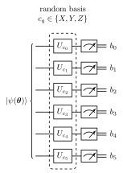
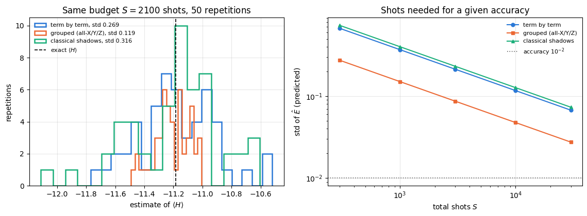
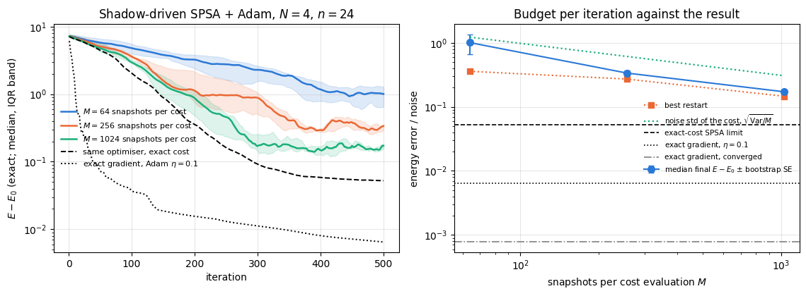
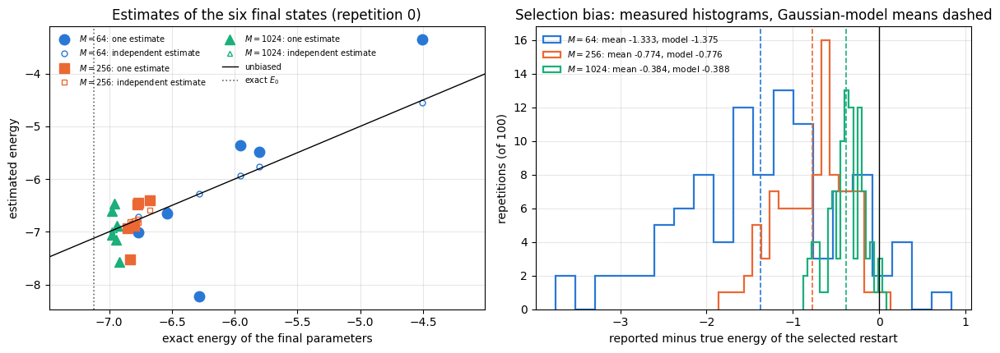
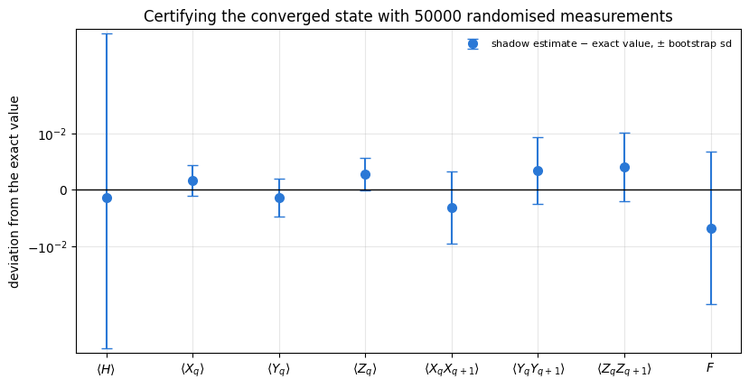

42 — the variational quantum eigensolver treated the energy \(E(\boldsymbol\theta)=\langle\psi(\boldsymbol\theta)\vert H\vert\psi(\boldsymbol\theta)\rangle\) as a number that is simply available. On a simulator it is: one einsum per Hamiltonian term. On a quantum computer it is not available at all. A quantum computer can only prepare a state and measure qubits, and a measurement returns one bit per qubit drawn from the Born distribution. Every expectation value has to be estimated from repetitions, and the number of repetitions is what a real experiment pays for.
That cost is the subject of this notebook. A VQE iteration with a parameter-shift gradient needs \(2n\) energy evaluations; each energy is a sum of \(O(N)\) (for a spin chain) or \(O(N^4)\) (for a molecule) Pauli terms; each term needs enough shots to be resolved. For molecular Hamiltonians the number of measurements is one of the dominant costs of the algorithm, and reducing it is an active field of its own (Tilly et al., 2022, review the strategies).
Three strategies are compared here, all on the same Hamiltonian and the same state:
term by term — measure each Pauli string in its own experiment;
qubit-wise-commuting grouping — collect terms that can be read off from the same measurement setting and measure each group once (Verteletskyi, Yen and Izmaylov, 2020);
classical shadows — measure every qubit in a random Pauli basis, store the record, and estimate any observable afterwards (Huang, Kueng and Preskill, 2020), as built in 24 — classical shadows.
The comparison is made at a fixed total number of shots, the quantity an experiment pays for, and each deterministic strategy is also given its optimal split of those shots. We then put shadow-estimated energies inside the optimisation loop and study a second effect: what a noisy cost function does to the reported answer, in addition to what it does to the convergence.
Road map. Section 3 counts terms and measurement settings and derives the minimum number of settings for a nearest-neighbour chain. Section 4 derives the variance of the energy estimator for each strategy at fixed budget, including the covariances between terms measured in the same shot and the optimal split of the shots. Section 5 prepares the state to be measured with the VQE of notebook 42. Section 6 checks all three predictions against simulation. Section 7 estimates the six observables of notebook 42’s panel (33 Pauli strings) from one shadow data set. Section 8 puts shadow energies inside an SPSA loop and measures accuracy against snapshot budget. Section 9 derives and measures the selection bias that noisy costs create. Section 10 is a remark on derandomisation. Section 11 is the final characterisation of the converged state with bootstrap error bars.
What you will learn
Physics
why two Pauli observables can be read off from the same single-qubit measurement setting if and only if they agree qubit by qubit, and the derivation of how many settings a nearest-neighbour XXZ chain therefore needs;
how the covariance between terms measured in the same shot enters the variance, and when it matters (for the state studied here it more than triples the variance of one of the three settings);
what a variational energy estimated from randomised measurements costs.
Numerical methods
the exact single-snapshot covariance of two Pauli estimators under random Pauli bases, and its verification;
why selecting the best of several noisy cost values reports a number biased below the truth, by how much, and why the answer must be re-measured with an independent data set (the winner’s curse);
bootstrap error bars for non-linear functions of the same data set.
Implementation practice
chunked snapshot collection, so that a vmap over snapshots never materialises more than a few thousand copies of the state;
a shadow-based cost function that is jit-able and vmap-able, so it can be placed inside a lax.scan training loop;
one batched Pauli estimator that turns a data set of integers into a (snapshots \(\times\) observables) matrix, from which means, medians of means and bootstrap errors are cheap array operations.
Prerequisites
24 — classical shadows: the randomised measurement protocol, the inverse measurement channel, the single-snapshot Pauli estimator and its \(3^k\) variance, median of means and bootstrap errors. All of that is used here and not re-derived;
Conventions and sizes.\(N=6\) spins throughout, open chain, Pauli convention \(H=\sum_{\langle ij\rangle}(J_{xx}X_iX_j+J_{yy}Y_iY_j+J_{zz}Z_iZ_j)+h_x\sum_iX_i\). The main model is the XXZ chain with \(J_{xx}=J_{yy}=-1\), \(J_{zz}=-1/2\), \(h_x=1\); the XY chain (\(J_{zz}=0\)) appears as a control.
Configuration
Every notebook of this course starts with the same cell. Choose where to run (DEVICE) and the floating-point precision (PRECISION): "double" = float64/complex128 (default, recommended for physics), "single" = float32/complex64 (half the memory, faster on consumer GPUs, but watch the round-off). All code below derives its dtypes from RDTYPE/CDTYPE and its check tolerances from TOL, so nothing else needs to change.
Code
# ==============================================================================# CONFIGURATION -- adapt to your hardware, then run the notebook top to bottom# ==============================================================================DEVICE ="auto"# "auto": use a GPU if JAX finds one, else CPU | "cpu" | "gpu"PRECISION ="double"# "double": float64/complex128 | "single": float32/complex64import osif DEVICE =="cpu": os.environ["JAX_PLATFORMS"] ="cpu"# must be set BEFORE jax is importedimport stringfrom functools import partialimport mathimport numpy as npimport jaximport jax.numpy as jnpfrom jax import lax# Precision is configurable: "double" = float64/complex128 (default; needed for long time evolutions and# tight validation), "single" = float32/complex64 (half the memory, faster on consumer GPUs).# In a notebook PRECISION is defined in the Configuration cell; for this module use the env var QE_PRECISION.PRECISION =globals().get("PRECISION", os.environ.get("QE_PRECISION", "double"))jax.config.update("jax_enable_x64", PRECISION =="double")RDTYPE = jnp.float64 if PRECISION =="double"else jnp.float32 # real dtypeCDTYPE = jnp.complex128 if PRECISION =="double"else jnp.complex64 # complex dtype of all states/operatorsTOL =1e-10if PRECISION =="double"else1e-4# tolerance for sanity checks (asserts)_LETTERS = string.ascii_letters # the 52 einsum index labels a-z, A-Zimport timeimport matplotlib.pyplot as pltif DEVICE =="gpu"and jax.default_backend() =="cpu":print("WARNING: DEVICE='gpu' requested but JAX found no GPU -- running on CPU.")print(f"JAX {jax.__version__} | backend: {jax.default_backend()} | devices: {jax.devices()}")print(f"precision: {PRECISION} -> real {RDTYPE.__name__}, complex {CDTYPE.__name__}, check tolerance TOL={TOL:g}")
JAX 0.11.0 | backend: cpu | devices: [CpuDevice(id=0)]
precision: double -> real float64, complex complex128, check tolerance TOL=1e-10
2. Engine recap and helpers
From the engine we take the shadow primitives (collect_pauli_shadows, shadow_estimate_pauli), the basis rotations _BASIS_ROT that define the measurement settings, sample_bitstrings for the deterministic protocols, the Hamiltonian machinery and lanczos_ground_state. The batched shadow estimator, the chunked collector, the median-of-means and bootstrap helpers are the ones derived in 24 — classical shadows; the optimiser and training loop are those of 41 — optimisers.
Engine recap — the simulator primitives used in this notebook (click to expand)
# ==============================================================================# ENGINE RECAP: the functions of quantum_engine.py (SmoQ.jax) used in this notebook.# Each one is derived, with its mathematics and an independent check, in notebook 08b# (Chapter 3), 'Building the quantum simulator engine'.# States are rank-N tensors of shape (2,)*N; every operator acts through ONE einsum.# ==============================================================================# ----------------------------------------------------------------------------# 1. Elementary matrices: Paulis, Clifford generators, rotations# ----------------------------------------------------------------------------I2 = jnp.eye(2, dtype=CDTYPE)X = jnp.array([[0, 1], [1, 0]], dtype=CDTYPE)Y = jnp.array([[0, -1j], [1j, 0]], dtype=CDTYPE)Z = jnp.array([[1, 0], [0, -1]], dtype=CDTYPE)H = jnp.array([[1, 1], [1, -1]], dtype=CDTYPE) / jnp.sqrt(2.0) # Hadamard: Z-basis <-> X-basisS = jnp.array([[1, 0], [0, 1j]], dtype=CDTYPE) # phase gate, S^2 = ZSDG = S.conj().TPAULI = {"I": I2, "X": X, "Y": Y, "Z": Z}CZ = jnp.diag(jnp.array([1, 1, 1, -1], dtype=CDTYPE))XX = jnp.kron(X, X)YY = jnp.kron(Y, Y)ZZ = jnp.kron(Z, Z)def rx(theta):"""Rotation about x: Rx(theta) = exp(-i theta X/2) = cos(theta/2) 1 - i sin(theta/2) X. Derivation: for any operator with P^2 = 1 the exponential series splits into even/odd parts, exp(-i a P) = cos(a) 1 - i sin(a) P. Here a = theta/2. `theta` may be a traced JAX scalar, so the gate is differentiable (jax.grad) and jit-able. """ c, s = jnp.cos(theta /2), jnp.sin(theta /2)return jnp.array([[c, -1j* s], [-1j* s, c]], dtype=CDTYPE)def ry(theta):"""Rotation about y: Ry(theta) = exp(-i theta Y/2) = [[cos, -sin], [sin, cos]](theta/2) (real matrix).""" c, s = jnp.cos(theta /2), jnp.sin(theta /2)return jnp.array([[c, -s], [s, c]], dtype=CDTYPE)def rz(theta):"""Rotation about z: Rz(theta) = exp(-i theta Z/2) = diag(e^{-i theta/2}, e^{+i theta/2}).""" e = jnp.exp(-0.5j* theta)return jnp.array([[e, 0], [0, jnp.conj(e)]], dtype=CDTYPE)# ----------------------------------------------------------------------------# 2. THE core primitive: a k-qubit operator acting on a tensor through ONE einsum# ----------------------------------------------------------------------------def apply_gate(psi, U, qubits):"""Apply a k-qubit operator U to the axes `qubits` of the tensor `psi`. MATH ---- One qubit (k=1), target q: psi'[s_0,..,a,..,s_{N-1}] = sum_b U[a,b] psi[s_0,..,b,..,s_{N-1}] Two qubits (k=2), targets (q1,q2); the 4x4 matrix is reshaped to U[a1,a2,b1,b2]: psi'[.., a1, .., a2, ..] = sum_{b1,b2} U[a1,a2,b1,b2] psi[.., b1, .., b2, ..] This IS the action of (1 x .. x U x .. x 1) -- written without ever building it. EINSUM TRANSLATION (generated automatically below) ------------------ N=3, q=1 : "db,abc->adc" d = new (output) index of qubit 1 N=4, q=(1,3) : "efbd,abcd->aecf" e,f = new indices of qubits 1 and 3 Recipe: label the axes of psi with letters a,b,c,...; give every target qubit a NEW letter (the next unused ones); U carries (new letters)+(old letters of the targets); the output is psi's labels with the target letters replaced by the new ones. IMPLEMENTATION NOTES -------------------- * reshape of U: (2^k,2^k) -> (2,)*2k. Row index = (a1..ak), column = (b1..bk), and the FIRST qubit in `qubits` is the most significant bit of the small matrix, i.e. it corresponds to the LEFT factor of kron(A,B). * `qubits` may be any distinct axes in any order: non-neighbouring gates cost the same. * U need not be unitary: projectors, Kraus operators and Hamiltonian terms reuse this. * psi may be ANY tensor with those axes of size 2: a state (rank N), a density tensor (rank 2N: ket axes 0..N-1, bra axes N..2N-1), ... COST O(2^k * 2^N) operations, O(2^N) memory (dense matrix: O(4^N) both). JAX `qubits` must be static Python ints (they define the einsum string); psi and U are traced, so the function can sit inside jit / grad / vmap / scan. """ qubits =tuple(int(q) for q in qubits) k, n =len(qubits), psi.ndim U = jnp.asarray(U, dtype=psi.dtype).reshape((2,) * (2* k)) # matrix -> rank-2k tensor inp =list(_LETTERS[:n]) # labels of psi's axes new = _LETTERS[n:n + k] # fresh labels for the outputs out = inp.copy()for a, q inzip(new, qubits): out[q] = a # target axes get the new labels sub =f"{''.join(new)}{''.join(inp[q] for q in qubits)},{''.join(inp)}->{''.join(out)}"return jnp.einsum(sub, U, psi)# ----------------------------------------------------------------------------# 3. State preparation# ----------------------------------------------------------------------------def zero_state(N):"""|00...0>: a rank-N tensor of zeros with a single 1 at index (0,0,...,0). JAX arrays are immutable: `.at[idx].set(v)` returns an updated COPY (functional style)."""return jnp.zeros((2,) * N, dtype=CDTYPE).at[(0,) * N].set(1.0)def haar_state(key, N):"""Haar-random pure state: a complex Gaussian vector, normalised. (The Gaussian measure is unitarily invariant, so the direction is uniformly distributed.) `key` is an explicit JAX PRNG key -- same key, same state: reproducible science.""" k1, k2 = jax.random.split(key) v = jax.random.normal(k1, (2,) * N) +1j* jax.random.normal(k2, (2,) * N)return (v / jnp.linalg.norm(v)).astype(CDTYPE)# ----------------------------------------------------------------------------# 4. Reduced density matrices & observables (matrix-free)# ----------------------------------------------------------------------------def rdm(psi, keep):"""Reduced density matrix of the qubits `keep` from a PURE state: rho_A = Tr_B |psi><psi|. MATH rho_A[a, a'] = sum_{b} psi[a, b] psi^*[a', b] (a: indices of A, b: of the rest B) EINSUM TRANSLATION N=3, keep=(0,): "abc,Abc->aA" with operands psi, psi^* * letters of B (b,c) appear in BOTH operands and not in the output -> summed = traced out * the kept axis gets a different letter in the second operand -> stays open (a and A) The full |psi><psi| (4^N numbers) is never formed; cost O(2^N 2^|A|). Returns a (2^|A|, 2^|A|) matrix with row/column order following `keep`. """ keep =tuple(int(q) for q in keep) n, k = psi.ndim, len(keep) a =list(_LETTERS[:n]) b = a.copy()for new, q inzip(_LETTERS[n:n + k], keep): b[q] = new sub =f"{''.join(a)},{''.join(b)}->{''.join(a[q] for q in keep)}{''.join(b[q] for q in keep)}"return jnp.einsum(sub, psi, jnp.conj(psi)).reshape(2** k, 2** k)def expect_local(psi, O, qubits):"""<psi| O_qubits |psi> for a k-local operator O (2^k x 2^k matrix). MATH <O> = Tr(rho_A O) with A = `qubits`: a local observable only sees the local state. Cost O(2^N) for the RDM + O(4^k) for the small trace. One RDM serves ALL observables on A (e.g. <X>,<Y>,<Z> from a single 2x2 matrix). """return jnp.real(jnp.trace(rdm(psi, qubits) @ jnp.asarray(O, dtype=CDTYPE)))def apply_pauli_string(psi, ops):"""Apply a Pauli string P = P_0 x P_1 x ... to psi. `ops` is a dict {qubit: 'X'|'Y'|'Z'} or a string like 'XIZY' (one letter per qubit; 'I' skipped). N single-qubit einsums -- cost O(N 2^N) -- instead of one 2^N x 2^N matrix."""ifisinstance(ops, str): ops = {q: p for q, p inenumerate(ops) if p !="I"}for q, p in ops.items(): psi = apply_gate(psi, PAULI[p], [q])return psidef expect_pauli_string(psi, ops):"""<psi|P|psi> = <psi | (P psi)> : apply the string, then ONE inner product (jnp.vdot conjugates its first argument). Works for strings of any weight, e.g. the N-body correlator <X X ... X>."""return jnp.real(jnp.vdot(psi, apply_pauli_string(psi, ops)))def all_local_expectations(psi):"""Bloch vectors of all qubits: array (N,3) with rows (<X_q>, <Y_q>, <Z_q>), from the 1-qubit RDMs.""" out = []for q inrange(psi.ndim): r = rdm(psi, [q]) out.append(jnp.stack([jnp.real(jnp.trace(r @ P)) for P in (X, Y, Z)]))return jnp.stack(out)# ----------------------------------------------------------------------------# 5. State characteristics: entropies, fidelity, negativity# ----------------------------------------------------------------------------def schmidt_values(psi, subsystem):"""Schmidt coefficients of the bipartition A|B with A = `subsystem`. MATH Group the tensor axes into a matrix M[(a),(b)] = psi[a,b] of shape (2^|A|, 2^|B|). Its SVD M = U diag(lambda) V^dag IS the Schmidt decomposition |psi> = sum_k lambda_k |u_k>_A |v_k>_B , rho_A has eigenvalues lambda_k^2. IMPLEMENTATION transpose (A axes first) -> reshape -> svd. No density matrix needed. """ A =tuple(int(q) for q in subsystem) B =tuple(q for q inrange(psi.ndim) if q notin A) M = jnp.transpose(psi, A + B).reshape(2**len(A), -1)return jnp.linalg.svd(M, compute_uv=False)def entanglement_entropy(psi, subsystem, base=2.0):"""Entanglement entropy S_A = -sum_k p_k log p_k with p_k = lambda_k^2 (squared Schmidt values). Product state: 0. Bell/GHZ across any cut: 1 bit. Random state: ~ |A| - 1/(2 ln2) 2^{|A|-|B|} (Page).""" p = jnp.clip(schmidt_values(psi, subsystem) **2, 1e-16, None)return-jnp.sum(p * jnp.log(p)) / jnp.log(base)def fidelity_pure(psi, phi):"""F = |<psi|phi>|^2 between two pure states."""return jnp.abs(jnp.vdot(psi, phi)) **2# ----------------------------------------------------------------------------# 6. Measurements (Born rule, collapse, sampling)# ----------------------------------------------------------------------------_BASIS_ROT = {"Z": I2, "X": H, "Y": H @ SDG} # U maps the eigenbasis of the Pauli to |0>,|1>: P = U^dag Z Udef sample_bitstrings(key, psi, shots, bases=None):"""Sample `shots` outcomes of measuring ALL qubits (no collapse bookkeeping needed). MATH p(s) = |psi[s]|^2 ; optional per-qubit bases string like 'XZY' rotates first. IMPLEMENTATION `jax.random.categorical` draws flat indices from log-probabilities; the bits are unpacked with shifts: s_q = (i >> (N-1-q)) & 1 (qubit 0 = most significant bit). Returns an int array of shape (shots, N). """ N = psi.ndimif bases isnotNone:for q, b inenumerate(bases): psi = apply_gate(psi, _BASIS_ROT[b], [q]) logp = jnp.log(jnp.clip(jnp.abs(psi.reshape(-1)) **2, 1e-300, None)) idx = jax.random.categorical(key, logp, shape=(shots,))return (idx[:, None] >> jnp.arange(N -1, -1, -1)[None, :]) &1# ----------------------------------------------------------------------------# 8. Hamiltonians as lists of local terms; H|psi> matrix-free# ----------------------------------------------------------------------------def heisenberg_terms(N, Jxx=1.0, Jyy=1.0, Jzz=1.0, hx=0.0, hy=0.0, hz=0.0, periodic=False, bonds=None):"""Spin-1/2 Hamiltonian in Pauli convention H = sum_<ij> (Jxx X_i X_j + Jyy Y_i Y_j + Jzz Z_i Z_j) + sum_i (hx X_i + hy Y_i + hz Z_i) returned as a LIST of local terms [(qubits, small_matrix), ...] -- this list *is* our Hamiltonian. Heisenberg: Jxx=Jyy=Jzz XXZ: Jxx=Jyy!=Jzz XY: Jzz=0 TFIM: only Jzz and hx. `bonds` overrides the default open chain (any graph: ladders, 2D lattices, all-to-all, ...)."""if bonds isNone: bonds = [(i, i +1) for i inrange(N -1)] + ([(N -1, 0)] if periodic and N >2else []) terms = [((i, j), Jxx * XX + Jyy * YY + Jzz * ZZ) for (i, j) in bonds]if hx !=0or hy !=0or hz !=0: terms += [((i,), hx * X + hy * Y + hz * Z) for i inrange(N)]return termsdef apply_hamiltonian(terms, psi):"""H|psi> = sum_k h_k|psi>, every term applied with `apply_gate` (h_k is Hermitian, not unitary -- the einsum does not care). Cost O(#terms * 2^N). This matrix-vector product is ALL that Lanczos, Chebyshev and Krylov methods need, which is why they scale to N ~ 25-30.""" out = jnp.zeros_like(psi)for qubits, h in terms: out = out + apply_gate(psi, h, qubits)return outdef energy(terms, psi):"""<psi|H|psi> = Re <psi | (H psi)>."""return jnp.real(jnp.vdot(psi, apply_hamiltonian(terms, psi)))def dense_hamiltonian(terms, N):"""Dense 2^N x 2^N matrix for VALIDATION on small N -- built from the matrix-free action: column j of H is H|e_j>. `jax.vmap` applies H to all basis vectors at once.""" eye = jnp.eye(2** N, dtype=CDTYPE).reshape((2** N,) + (2,) * N) cols = jax.vmap(lambda e: apply_hamiltonian(terms, e).reshape(-1))(eye)return cols.T# ----------------------------------------------------------------------------# 9. Time evolution: TEBD / Trotter-Suzuki, Chebyshev, Krylov, exact# ----------------------------------------------------------------------------def lanczos(matvec, v0, m=60, reorth=True):"""m-step Lanczos iteration: orthonormal basis V of the Krylov space span{v, Hv, H^2 v, ...} in which H is TRIDIAGONAL: T = V^dag H V = tridiag(beta, alpha, beta). Recurrence w = H v_j - alpha_j v_j - beta_{j-1} v_{j-1}, alpha_j = <v_j|H|v_j>, beta_j = ||w||. `reorth=True` re-orthogonalises against all previous vectors (cures the loss of orthogonality of floating-point Lanczos at the price of O(m^2) inner products). Only `matvec` (H|psi>) is needed -> matrix-free. Returns (alphas, betas, V[m, 2,..,2]). """ v = v0 / jnp.linalg.norm(v0) V, alphas, betas = [v], [], [] w = matvec(v)for j inrange(m): a = jnp.real(jnp.vdot(V[j], w)) alphas.append(a) w = w - a * V[j] - (betas[-1] * V[j -1] if j >0else0.0)if reorth:for u in V: w = w - jnp.vdot(u, w) * u b = jnp.linalg.norm(w)if j == m -1orfloat(b) <1e-12:break betas.append(b) V.append(w / b) w = matvec(V[-1])return np.array(alphas, dtype=float), np.array(betas, dtype=float), jnp.stack(V)def lanczos_ground_state(terms, N, m=80, key=None, restarts=3):"""Ground state (E_0, |psi_0>) from restarted Lanczos: diagonalise the small T, map its lowest eigenvector back with V, use it as the next start vector. Extremal eigenvalues converge first.""" key = jax.random.PRNGKey(0) if key isNoneelse key v = haar_state(key, N) mv = jax.jit(lambda p: apply_hamiltonian(terms, p)) E =Nonefor _ inrange(restarts): a, b, V = lanczos(mv, v, m) w, S_ = np.linalg.eigh(np.diag(a) + np.diag(b, 1) + np.diag(b, -1)) v = jnp.tensordot(jnp.asarray(S_[:, 0], dtype=CDTYPE), V, axes=1) v = v / jnp.linalg.norm(v) E = w[0]returnfloat(E), v# ----------------------------------------------------------------------------# 13. Classical shadows (random Pauli measurements)# ----------------------------------------------------------------------------def collect_pauli_shadows(key, psi, n_shadows):"""Randomised-measurement data set (Huang, Kueng, Preskill 2020). Each snapshot: draw a basis b_q in {X,Y,Z} for every qubit, rotate, measure all qubits once. Returns (bases, bits), int arrays of shape (n_shadows, N); basis code 0=X, 1=Y, 2=Z. JAX: one snapshot is a pure function of its key -> `vmap` over keys gives all snapshots in parallel; `rots[bases[q]]` selects the rotation with a traced index (gather), so no Python branching.""" N = psi.ndim rots = jnp.stack([_BASIS_ROT["X"], _BASIS_ROT["Y"], _BASIS_ROT["Z"]])def one(k): kb, ks = jax.random.split(k) bases = jax.random.randint(kb, (N,), 0, 3) phi = psifor q inrange(N): phi = apply_gate(phi, rots[bases[q]], [q]) logp = jnp.log(jnp.clip(jnp.abs(phi.reshape(-1)) **2, 1e-300, None)) idx = jax.random.categorical(ks, logp) bits = (idx >> jnp.arange(N -1, -1, -1)) &1return bases, bitsreturn jax.vmap(one)(jax.random.split(key, n_shadows))def shadow_estimate_pauli(bases, bits, ops):"""Estimate <P> of a Pauli string `ops` = {qubit: 'X'|'Y'|'Z'} from Pauli shadows. single-snapshot estimator o = prod_{q in supp(P)} 3 * [b_q == P_q] * (-1)^{bit_q} (the factor 3 per qubit inverts the measurement channel; a snapshot contributes only if all its bases match on the support -- probability 3^{-k} -- hence variance ~ 3^k for weight-k strings). Returns (mean, standard error).""" code = {"X": 0, "Y": 1, "Z": 2} val = jnp.ones(bases.shape[0])for q, p in ops.items(): val = val *3.0* (bases[:, q] == code[p]) * (1-2* bits[:, q])return jnp.mean(val), jnp.std(val) / jnp.sqrt(val.shape[0])# ----------------------------------------------------------------------------# 15. Variational circuits: ansatz, gradients, optimizers# ----------------------------------------------------------------------------def hea_num_params(N, layers):"""Number of angles of `hardware_efficient_ansatz`: (layers+1) rotation blocks x N qubits x 2 angles."""return2* N * (layers +1)def hardware_efficient_ansatz(theta, N, layers, entangler=CZ, periodic=False):"""Hardware-efficient ansatz |psi(theta)> = R(theta_L) * prod_{l<L} [ ENT * R(theta_l) ] |0...0>, R = prod_q Rz(.) Ry(.), ENT = a chain of CZ (or any 2-qubit gate). `theta` is a flat vector of length 2N(L+1). The function is a pure map theta -> state, hence jit-able and differentiable end to end.""" theta = theta.reshape(layers +1, N, 2) psi = zero_state(N)for l inrange(layers +1):for q inrange(N): psi = apply_gate(psi, ry(theta[l, q, 0]), [q]) psi = apply_gate(psi, rz(theta[l, q, 1]), [q])if l < layers:for q inrange(N -1): psi = apply_gate(psi, entangler, [q, q +1])if periodic and N >2: psi = apply_gate(psi, entangler, [N -1, 0])return psidef adam_init(theta):"""Adam state: (first moment m, second moment v, step counter t)."""return (jnp.zeros_like(theta), jnp.zeros_like(theta), 0)def adam_update(theta, g, state, lr=0.05, b1=0.9, b2=0.999, eps=1e-8):"""One Adam step (Kingma & Ba): m <- b1 m + (1-b1) g, v <- b2 v + (1-b2) g^2, theta <- theta - lr * m_hat / (sqrt(v_hat) + eps), hats = bias-corrected moments. Momentum (m) averages noisy gradients (great with SPSA); v gives a per-parameter step size.""" m, v, t = state t = t +1 m = b1 * m + (1- b1) * g v = b2 * v + (1- b2) * g **2 theta = theta - lr * (m / (1- b1 ** t)) / (jnp.sqrt(v / (1- b2 ** t)) + eps)return theta, (m, v, t)
Code
# ==============================================================================# PLOT STYLE + the helpers imported from notebooks 24, 41 and 42# ==============================================================================import itertoolsPALETTE = ["#2a78d6", "#eb6834", "#1baf7a", "#eda100", "#e87ba4", "#4a3aa7"] # colour-blind-friendly, fixed orderMARKERS = ["o", "s", "^", "D", "v", "P"]plt.rcParams.update({"axes.prop_cycle": plt.cycler(color=PALETTE), "axes.grid": True,"grid.alpha": 0.3, "font.size": 10, "legend.frameon": False})BASIS_CHARS ="XYZ"# shadow basis code 0 = X, 1 = Y, 2 = Z (engine convention)PAULI_LETTERS ="IXYZ"# Pauli-string digits 0 = I, 1 = X, 2 = Y, 3 = Zdef max_abs(a):"""Largest absolute entry of an array, as a Python float."""returnfloat(jnp.max(jnp.abs(jnp.asarray(a))))def bands(hist):"""Median and interquartile band of a batch of histories, shape (n_runs, n_steps) -> three curves.""" h = np.asarray(hist)return np.percentile(h, 25, axis=0), np.median(h, axis=0), np.percentile(h, 75, axis=0)def opt_adam(lr, b1=0.9, b2=0.999, eps=1e-8):"""Adam as an (init, update) pair -- the optimiser interface of notebook 41."""def init(theta):return (jnp.zeros_like(theta), jnp.zeros_like(theta))def update(theta, state, g, k): m, v = state m = b1 * m + (1- b1) * g v = b2 * v + (1- b2) * g **2return theta - lr * (m / (1- b1 ** k)) / (jnp.sqrt(v / (1- b2 ** k)) + eps), (m, v)return init, updatedef train(theta0, key, grad_rule, opt, monitor, n_steps):"""One training run compiled as a single `lax.scan` (notebook 41, Section 10).""" init_fn, update_fn = optdef body(carry, k): theta, state, key = carry key, sub = jax.random.split(key) g = grad_rule(theta, sub, k) theta, state = update_fn(theta, state, g, k)return (theta, state, key), monitor(theta) (theta, _, _), hist = lax.scan(body, (theta0, init_fn(theta0), key), jnp.arange(1, n_steps +1))return theta, histdef random_starts(n_runs, n_params, seed, scale=jnp.pi):"""`n_runs` independent parameter vectors drawn uniformly from [-scale, scale]^n, plus one PRNG key each.""" k1, k2 = jax.random.split(jax.random.PRNGKey(seed))return (jax.random.uniform(k1, (n_runs, n_params), minval=-scale, maxval=scale), jax.random.split(k2, n_runs))def grad_exact(cost):"""Exact gradient rule: reverse-mode AD, ignoring the key and the iteration counter.""" gfn = jax.grad(cost)returnlambda theta, key, k: gfn(theta)_collect_jit = jax.jit(collect_pauli_shadows, static_argnums=(2,)) # cache: one compile per (N, chunk)def collect_shadows(key, psi, n_shadows, chunk=4096):"""M randomised-measurement snapshots of `psi`, collected in blocks (notebook 24, Step 2). IMPL `collect_pauli_shadows` vmaps over keys; calling it on blocks of `chunk` keeps the batched intermediate (chunk x 2^N complex numbers) small. Block j uses `fold_in(key, j)`. COST O(M N 2^N) time, O(chunk 2^N) memory. Returns (bases, bits): int arrays of shape (M, N). """ bs, ts, done = [], [], 0while done < n_shadows: c =min(chunk, n_shadows - done) b, t = _collect_jit(jax.random.fold_in(key, done), psi, c) bs.append(b); ts.append(t); done += creturn jnp.concatenate(bs), jnp.concatenate(ts)def pauli_digits(labels):"""Pauli-string labels -> int array (K, N) with digits 0=I, 1=X, 2=Y, 3=Z."""return jnp.asarray([[PAULI_LETTERS.index(ch) for ch in lab] for lab in labels], dtype=jnp.int32)@jax.jitdef snapshot_values(bases, bits, digits):"""Single-snapshot Pauli estimates for every snapshot and every string (notebook 24, Eq. (6)). MATH o_m(P) = prod_{q in supp(P)} 3 (-1)^{b_mq} [c_mq = P_q] IMPL per qubit build the 4-entry lookup (1, 3s[.=X], 3s[.=Y], 3s[.=Z]) and gather each string's digit. COST O(M K N), integer input only, no branching. Returns an (M, K) real array. """ Mn, N = bases.shape sgn = (1-2* bits).astype(RDTYPE) out = jnp.ones((Mn, digits.shape[0]), dtype=RDTYPE)for q inrange(N): tab = jnp.stack([jnp.ones(Mn, dtype=RDTYPE)]+ [3.0* (bases[:, q] == p) * sgn[:, q] for p inrange(3)], axis=1) out = out * tab[:, digits[:, q]]return outdef median_of_means(values, n_groups):"""Median-of-means estimator, per column of an (M, K) array (notebook 24, Step 4).""" Mn, K = values.shape g = Mn // n_groups v = values[: g * n_groups].reshape(n_groups, g, K)return jnp.median(v.mean(axis=1), axis=0)def bootstrap_std(key, values, n_boot=200):"""Bootstrap standard deviation of the sample mean, per column of an (M, K) array (notebook 24, Step 4). IMPL a resample is a multiplicity vector counts = zeros(M).at[idx].add(1); the resampled mean is counts @ values / M. vmap over B resamples: ONE (B, M) x (M, K) matrix product. """ Mn = values.shape[0]def one(k): idx = jax.random.randint(k, (Mn,), 0, Mn)return jnp.zeros(Mn, dtype=RDTYPE).at[idx].add(1.0) counts = jax.vmap(one)(jax.random.split(key, n_boot))return (counts @ values / Mn).std(axis=0)
For the XXZ chain of Section 1 on an open chain of \(N\) sites the terms are \(X_iX_{i+1}\), \(Y_iY_{i+1}\), \(Z_iZ_{i+1}\) on each of the \(N-1\) bonds and \(X_i\) on each of the \(N\) sites, so
\[T=3(N-1)+N=4N-3 , \tag{2}\]
which is \(21\) at \(N=6\). For the transverse-field Ising model only the \(ZZ\) bonds and the \(X\) fields survive, so \(T=2N-1\). A molecular Hamiltonian in second quantisation, after the Jordan-Wigner transformation, has \(T=O(N^4)\) terms — the reason the accounting below matters.
so the task is to estimate \(T\) numbers. A quantum measurement reads each qubit in one basis, so \(\langle X_0X_1\rangle\) and \(\langle Y_0Y_1\rangle\) cannot both be read from the same shot.
3.2 Strategy 1: term by term
The simplest protocol. Split the budget of \(S\) shots equally, \(m=S/T\) shots per term; for term \(t\) rotate every qubit of \(\mathrm{supp}(P_t)\) into the eigenbasis of its Pauli factor, measure, and average the product of the \(\pm1\) outcomes. Each of the \(T\) experiments is independent of the others.
3.3 Strategy 2: qubit-wise-commuting groups
A measurement setting is a choice of one basis \(b_q\in\{X,Y,Z\}\) per qubit. A Pauli string \(P\) can be read off from a shot taken in setting \(b\) if and only if
\[\sigma^{(P)}_q\in\{\mathbb 1,\ b_q\}\quad\text{for every }q , \tag{3}\]
i.e. wherever \(P\) is not the identity, the setting measured exactly that Pauli. Two strings that both satisfy Eq. (3) for a common \(b\) are called qubit-wise commuting; one shot then yields an unbiased estimate of both. Grouping the \(T\) terms into as few settings as possible is a graph-colouring problem in general (Verteletskyi, Yen and Izmaylov, 2020), but for a nearest-neighbour chain we can solve it exactly.
Claim. The XXZ chain of Eq. (2) needs exactly \(G=3\) settings, and the transverse-field Ising chain exactly \(G=2\).
Lower bound. Fix one bond \((i,i+1)\). The three terms \(X_iX_{i+1}\), \(Y_iY_{i+1}\), \(Z_iZ_{i+1}\) require, by Eq. (3), the pairs \((b_i,b_{i+1})=(X,X)\), \((Y,Y)\) and \((Z,Z)\) respectively. One setting fixes one pair \((b_i,b_{i+1})\) and hence covers at most one of the three, so at least three settings are needed. For the Ising chain the terms \(Z_iZ_{i+1}\) and \(X_i\) demand \(b_i=Z\) and \(b_i=X\), which is already two.
Upper bound. Three settings suffice: measure every qubit in \(X\), then every qubit in \(Y\), then every qubit in \(Z\). The all-\(X\) setting delivers all \(N-1\) correlators \(\langle X_iX_{i+1}\rangle\)and all \(N\) fields \(\langle X_i\rangle\) from the same shots; the all-\(Y\) and all-\(Z\) settings deliver the remaining bond terms. For the Ising chain the all-\(Z\) and all-\(X\) settings suffice. \(\square\)
The number of experiments drops from \(T=4N-3\) to \(3\), independently of \(N\): for a local chain grouping removes the \(N\)-dependence of the setting count entirely. (Allowing general commuting sets rather than qubit-wise commuting ones can reduce the count further for other Hamiltonians, at the price of a Clifford circuit before the measurement.)
3.4 Strategy 3: classical shadows
Choose the basis of every qubit at random from \(\{X,Y,Z\}\) and record the bases and the outcome bits. Notebook 24 derived the single-snapshot estimator of a Pauli string \(P\) of weight \(k\):
where \(c_q\) is the basis actually measured on qubit \(q\) and \([\cdot]\) is an indicator. A snapshot contributes to \(P\) only if it happened to measure the right axis on all \(k\) qubits of the support — probability \(3^{-k}\) — and the factor \(3^k\) compensates exactly.

Figure 1. One snapshot, for the \(N=6\) chain of this notebook. Each qubit draws its basis \(c_q\in\{X,Y,Z\}\) independently and uniformly, the rotation \(U_{c_q}\) maps the eigenbasis of that Pauli operator onto \(\vert0\rangle,\vert1\rangle\) (\(U_X=H\), \(U_Y=HS^\dagger\), \(U_Z=\mathbb 1\)), and all qubits are measured in the \(Z\) basis. The record of the snapshot is the list of bases \(c_q\) and the bits \(b_q\).
The structural advantage is that the data are collected before anyone decides what to estimate. The structural disadvantage is visible in Eq. (4): a weight-2 term carries a second moment of \(9\) per snapshot, where a dedicated setting carries at most \(1\).
4. The variance of the energy estimator, at a fixed shot budget
All three strategies are unbiased, so the comparison is entirely about variance. Fix the total number of shots \(S\) — the number of times the machine is run — and compute \(\mathrm{Var}(\hat E)\) for each.
4.1 Term by term
Term \(t\) gets \(m=S/T\) shots. A single shot returns the product of \(\pm1\) outcomes on \(\mathrm{supp}(P_t)\), a random variable with mean \(\langle P_t\rangle\) and, because its square is \(1\), variance \(1-\langle P_t\rangle^2\). The \(T\) experiments are independent, so the variances of \(c_t\hat{\langle P_t\rangle}\) add:
The factor \(T\) is the price of splitting the budget \(T\) ways. Part of it can be recovered by giving the noisier terms more shots. With \(m_t\) shots for term \(t\) and \(a_t=\lvert c_t\rvert\sqrt{1-\langle P_t\rangle^2}\), the variance is \(\sum_ta_t^2/m_t\), to be minimised at fixed \(\sum_tm_t=S\). The Cauchy-Schwarz inequality gives \(\bigl(\sum_ta_t\bigr)^2=\bigl(\sum_t\tfrac{a_t}{\sqrt{m_t}}\sqrt{m_t}\bigr)^2\le\bigl(\sum_ta_t^2/m_t\bigr)S\), with equality for \(m_t\propto a_t\), so the optimal (Neyman) allocation achieves
The allocation needs the \(\langle P_t\rangle\), which are not known in advance; in practice they are taken from a pilot run or from the previous VQE iteration. Equation (5a) is the fair benchmark for the term-by-term protocol.
4.2 Grouped settings
With \(G\) settings and \(S/G\) shots each, one shot in setting \(g\) yields simultaneously the \(\pm1\) values \(p_t\) of every term in that group, so the natural per-shot random variable is the partial energy
\[A_g=\sum_{t\in g}c_t\,p_t .\]
The estimator is \(\hat E=\sum_g\bar A_g\) with \(\bar A_g\) the mean over the \(S/G\) shots of setting \(g\), hence
The off-diagonal terms of Eq. (6) are covariances between observables measured in the same shot. They can have either sign: negative covariances make grouping win by more than the factor \(T/G\) that the counting suggests, positive ones by less. The same Cauchy-Schwarz argument as for Eq. (5a), with \(S_g\propto\sqrt{\mathrm{Var}(A_g)}\) shots for setting \(g\), gives the optimally allocated grouped variance
Because the members of one group are qubit-wise commuting, every product \(P_tP_{t'}\) is again a Pauli string (equal single-qubit factors multiply to the identity), so Eq. (6) is exactly computable.
4.3 Classical shadows
Each snapshot yields one estimate of the whole energy,
\[\hat e_m=\sum_tc_t\,\hat o_m(P_t) ,\]
and the \(S\) snapshots are independent, so \(\mathrm{Var}_{\text{shadow}}(\hat E)=\mathrm{Var}(\hat e)/S\) with
The covariance can be evaluated in closed form. Let \(I=\mathrm{supp}(P_t)\cap\mathrm{supp}(P_{t'})\) and \(U=\mathrm{supp}(P_t)\cup\mathrm{supp}(P_{t'})\).
If \(P_t\) and \(P_{t'}\)disagree on some qubit of \(I\), no single snapshot can match both, so \(\hat o(P_t)\hat o(P_{t'})=0\) identically and \(\mathrm{Cov}=-\langle P_t\rangle\langle P_{t'}\rangle\).
because on \(I\) the two signs \((-1)^{b_q}\) appear twice and square to one, while the indicator is idempotent. The bases are uniform and independent, so the probability that all \(\lvert U\rvert\) of them match is \(3^{-\lvert U\rvert}\), and conditioned on that the remaining signs average to \(\langle P_tP_{t'}\rangle\) (the product string is supported exactly on \(U\setminus I\)). With \(k_t+k_{t'}=\lvert U\rvert+\lvert I\rvert\),
Setting \(t=t'\) gives \(\lvert I\rvert=k\) and \(\langle P^2\rangle=1\), reproducing \(\mathrm{Var}(\hat o)=3^{k}-\langle P\rangle^2\) — Eq. (7) of notebook 24. Equation (8) is the new ingredient, and it says something physical: two terms that overlap on \(\lvert I\rvert\) qubits and agree there are positively correlated by a factor \(3^{\lvert I\rvert}\), so on a chain, where neighbouring bond terms share a site, the off-diagonal part of Eq. (7) is comparable to the diagonal one.
4.4 What to expect
Counting alone suggests \(\mathrm{Var}_{\text{term}}:\mathrm{Var}_{\text{group}}\approx T:G\), i.e. \(21:3\) here, and puts shadows near term-by-term because of the \(3^k\) of Eq. (4). The covariances of Eqs. (6) and (8) can move both. We now compute all three numbers exactly and check them against simulation.
5. The state to be measured: a VQE ground state
The scenario is the realistic one: a variational circuit has been trained (notebook 42) and we now want to know what it produced. We reproduce that first step compactly — hardware-efficient ansatz, exact gradients, Adam, several random restarts — and keep the best run. Everything measured afterwards is measured on that state, whose exact properties we know but pretend not to.
Code
# ==============================================================================# STEP 1: the model, its exact ground state, and a trained variational state# ==============================================================================N_SITES =6MODELS = {"XXZ": (-1.0, -1.0, -0.5, 1.0), # (Jxx, Jyy, Jzz, hx)"XY": (-1.0, -1.0, 0.0, 1.0)}MODEL ="XXZ"L_ANS, LR_ANS, R_ANS, T_ANS =3, 0.4, 8, 250def model_terms(N, c):"""H = sum_i (c0 XX + c1 YY + c2 ZZ)_{i,i+1} + c3 sum_i X_i, as a list of local terms (c may be traced).""" bond = c[0] * XX + c[1] * YY + c[2] * ZZreturn [((i, i +1), bond) for i inrange(N -1)] + [((i,), c[3] * X) for i inrange(N)]c_model = jnp.asarray(MODELS[MODEL], dtype=RDTYPE)terms = model_terms(N_SITES, c_model)E0, psi_exact = lanczos_ground_state(terms, N_SITES)psi_exact = psi_exact / jnp.linalg.norm(psi_exact)E0_dense =float(np.min(np.linalg.eigvalsh(np.asarray(dense_hamiltonian(terms, N_SITES)))))print(f"{MODEL} chain, N={N_SITES}, couplings (Jxx, Jyy, Jzz, hx) = {MODELS[MODEL]}")print(f" exact ground energy: {E0:.9f} (Lanczos) vs {E0_dense:.9f} (dense eigh), "f"difference {abs(E0 - E0_dense):.1e}")assertabs(E0 - E0_dense) <1e-8n_ans = hea_num_params(N_SITES, L_ANS)cost_exact = jax.jit(lambda t: energy(terms, hardware_efficient_ansatz(t, N_SITES, L_ANS)))th0, ks0 = random_starts(R_ANS, n_ans, seed=101)t0 = time.perf_counter()th_fin, hist_vqe = jax.block_until_ready(jax.jit(jax.vmap(lambda t, k: train( t, k, grad_exact(cost_exact), opt_adam(LR_ANS), lambda z: cost_exact(z) - E0, T_ANS)))(th0, ks0))hist_vqe = np.asarray(hist_vqe)i_best =int(np.argmin(hist_vqe[:, -1]))theta_vqe = th_fin[i_best]psi_vqe = hardware_efficient_ansatz(theta_vqe, N_SITES, L_ANS)E_vqe =float(energy(terms, psi_vqe))print(f"\nVQE: {R_ANS} restarts x {T_ANS} Adam iterations, L={L_ANS}, n={n_ans} angles "f"({time.perf_counter() - t0:.1f} s)")print(f" median final E - E_0 = {np.median(hist_vqe[:, -1]):.5f}, best = {hist_vqe[:, -1].min():.5f}")print(f" the state we will now measure: E = {E_vqe:.6f} (E - E_0 = {E_vqe - E0:.3e}), "f"F = {float(fidelity_pure(psi_exact, psi_vqe)):.5f}, "f"S_half = {float(entanglement_entropy(psi_vqe, range(N_SITES //2))):.4f}")
VQE: 8 restarts x 250 Adam iterations, L=3, n=48 angles (2.9 s)
median final E - E_0 = 0.01742, best = 0.00791
the state we will now measure: E = -11.184801 (E - E_0 = 7.914e-03), F = 0.99904, S_half = 0.0393
Code
# ==============================================================================# STEP 2: the Hamiltonian as a list of (coefficient, Pauli-string label) pairs# ==============================================================================def hamiltonian_pauli_list(N, c):"""Eq. (1) for the chain: returns (labels, coefficients) with labels like 'IXXIII'. Order: the three bond terms of every bond, then the N field terms. """ labels, coeffs = [], []for i inrange(N -1):for p, cc inzip("XYZ", (c[0], c[1], c[2])):if cc !=0.0: labels.append("I"* i + p + p +"I"* (N - i -2)); coeffs.append(float(cc))for i inrange(N):if c[3] !=0.0: labels.append("I"* i +"X"+"I"* (N - i -1)); coeffs.append(float(c[3]))return labels, np.array(coeffs)LABELS, COEFFS = hamiltonian_pauli_list(N_SITES, MODELS[MODEL])T_TERMS =len(LABELS)DIGITS = pauli_digits(LABELS)EX_TERM = np.array([float(expect_pauli_string(psi_vqe, {q: ch for q, ch inenumerate(lab) if ch !="I"}))for lab in LABELS])print(f"{MODEL}: T = {T_TERMS} Pauli terms (Eq. (2) predicts 4N-3 = {4* N_SITES -3})")assert T_TERMS ==4* N_SITES -3print(f"reconstruction check: sum_t c_t <P_t> = {float(COEFFS @ EX_TERM):.9f} vs <psi|H|psi> = {E_vqe:.9f} "f"(difference {abs(float(COEFFS @ EX_TERM) - E_vqe):.1e})")assertabs(float(COEFFS @ EX_TERM) - E_vqe) <1e-8# the qubit-wise-commuting grouping of Section 3.3: one group per Pauli letterGROUPS = {p: [t for t, lab inenumerate(LABELS) ifset(lab) - {"I"} == {p}] for p in"XYZ"}G_SETTINGS =sum(1for p in"XYZ"if GROUPS[p])print(f"\nqubit-wise-commuting groups (Section 3.3): G = {G_SETTINGS} settings, "+", ".join(f"all-{p}: {len(GROUPS[p])} terms"for p in"XYZ"))for p in"XYZ":if GROUPS[p]:print(f" all-{p}: "+", ".join(LABELS[t] for t in GROUPS[p]))
The best of the eight restarts has \(E-E_0=7.9\cdot10^{-3}\) and fidelity \(F=0.9990\) with the exact ground state, and its half-chain entanglement entropy is only \(0.039\) bits: the state is close to a product state polarised along \(-x\) (the field \(h_x=+1\) favours \(\langle X_q\rangle=-1\)). The sum of the \(21\) Pauli expectation values reproduces \(\langle\psi\vert H\vert\psi\rangle\) to machine precision, so the list of labels and coefficients is the Hamiltonian, and the three groups are exactly those of Section 3.3: eleven terms read from the all-\(X\) setting, five from each of the other two.
6. Predicted and sampled variances of the three estimators
6.1 From formula to code
The three predictions of Eqs. (5), (6) and (8) need exact expectation values of Pauli strings and of products of Pauli strings on the state. Both are one expect_pauli_string call each, so the predictions cost nothing; what they need is careful bookkeeping of which strings multiply to what.
For the simulation we need shots in a fixed setting. sample_bitstrings(key, psi, shots, bases="XXXXXX") rotates every qubit into the \(X\) eigenbasis and samples; the \(\pm1\) outcomes are \(s_q=1-2b_q\) and the estimate of a string is the product of \(s_q\) over its support. Drawing many shots in one call is efficient but jax.random.categorical materialises a (shots, 2^N) array of log-probabilities, so we chunk the draw exactly as we chunk the snapshot collection.
Code
# ==============================================================================# STEP 3: exact predictions of Eqs. (5), (6) and (8)# ==============================================================================def pauli_product(a, b):"""Label of the product of two QUBIT-WISE COMMUTING Pauli strings (equal letters cancel). Returns None if the two strings disagree on a shared qubit, i.e. they are not qubit-wise commuting. """ out = []for ca, cb inzip(a, b):if ca =="I": out.append(cb)elif cb =="I": out.append(ca)elif ca == cb: out.append("I")else:returnNonereturn"".join(out)def expect_label(psi, lab):"""<P> for a Pauli-string label; the all-identity string has expectation 1.""" ops = {q: ch for q, ch inenumerate(lab) if ch !="I"}returnfloat(expect_pauli_string(psi, ops)) if ops else1.0def predicted_variances(psi, labels, coeffs, groups):"""(S x Var) of the energy estimator for the three strategies, from Eqs. (5)-(8). MATH term T sum_t c_t^2 (1 - <P_t>^2) optimal split: (sum_t |c_t| sqrt(1 - <P_t>^2))^2 group G sum_g Var(A_g) optimal split: (sum_g sqrt(Var(A_g)))^2 shadow sum_{t,t'} c_t c_t' Cov(o_t, o_t'), Cov = 3^|I| <P_t P_t'> - <P_t><P_t'> (0 - .. if they clash) Returns a dict with the three numbers, their optimally allocated versions, the per-setting contributions to Eq. (6), the sum of the individual term variances (the covariance-free comparison point) and the diagonal (covariance-free) part of the shadow variance. """ ex = np.array([expect_label(psi, lab) for lab in labels]) T =len(labels) v_term = T *float(np.sum(coeffs **2* (1- ex **2))) # Eq. (5) v_term_opt =float(np.sum(np.abs(coeffs) * np.sqrt(1- ex **2))) **2# Eq. (5a) parts = {}for p, idx in groups.items(): # Eq. (6) acc =0.0for a in idx:for b in idx: lab = pauli_product(labels[a], labels[b]) acc += coeffs[a] * coeffs[b] * (expect_label(psi, lab) - ex[a] * ex[b]) parts[p] = acc v_group =sum(1for p in groups if groups[p]) *float(sum(parts.values())) v_group_opt =float(sum(np.sqrt(max(v, 0.0)) for v in parts.values())) **2# Eq. (6a) v_shadow, v_shadow_diag =0.0, 0.0# Eqs. (7) and (8)for a inrange(T):for b inrange(T): lab = pauli_product(labels[a], labels[b])if lab isNone: # disagree on a shared qubit cov =-ex[a] * ex[b]else: ov =sum(1for ca, cb inzip(labels[a], labels[b]) if ca !="I"and cb !="I") cov =3.0** ov * expect_label(psi, lab) - ex[a] * ex[b] v_shadow += coeffs[a] * coeffs[b] * covif a == b: v_shadow_diag += coeffs[a] **2* covreturndict(term=v_term, group=v_group, shadow=float(v_shadow), parts=parts, term_opt=v_term_opt, group_opt=v_group_opt, shadow_diag=float(v_shadow_diag), diagonal=float(np.sum(coeffs **2* (1- ex **2))))PRED = predicted_variances(psi_vqe, LABELS, COEFFS, GROUPS)var_term, var_group, var_shadow = PRED["term"], PRED["group"], PRED["shadow"]print("predicted variance of the energy estimator, multiplied by the total budget S:")S_TOT =2100# divisible by T = 21 and by G = 3print(f"{'strategy':>24s}{'settings':>9s}{'S x Var, equal split':>21s}{'std at S=2100':>14s} "f"{'S x Var, optimal split':>23s}")for lab, v, g, vo in (("term by term", var_term, T_TERMS, PRED["term_opt"]), ("grouped (all-X/Y/Z)", var_group, G_SETTINGS, PRED["group_opt"]), ("classical shadows", var_shadow, 1, var_shadow)):print(f"{lab:>24s}{g:9d}{v:21.3f}{np.sqrt(v / S_TOT):14.4f}{vo:23.3f}")print(f"\ncontributions to the grouped variance per setting: "+", ".join(f"all-{p}: {PRED['parts'][p]:.3f}"for p in"XYZ"))for p in"XYZ": idx = GROUPS[p] diag_p =float(np.sum(COEFFS[idx] **2* (1- EX_TERM[idx] **2)))print(f" all-{p}: diagonal (individual variances) {diag_p:.3f}, covariances {PRED['parts'][p] - diag_p:+.3f}")print(f"sum of the INDIVIDUAL term variances, i.e. Eq. (6) with the covariances dropped: {PRED['diagonal']:.3f}")print(f"shadow variance: diagonal part of Eq. (7) {PRED['shadow_diag']:.3f}, "f"covariances {var_shadow - PRED['shadow_diag']:+.3f}")
predicted variance of the energy estimator, multiplied by the total budget S:
strategy settings S x Var, equal split std at S=2100 S x Var, optimal split
term by term 21 136.696 0.2551 90.047
grouped (all-X/Y/Z) 3 22.684 0.1039 20.269
classical shadows 1 161.381 0.2772 161.381
contributions to the grouped variance per setting: all-X: 1.427, all-Y: 4.973, all-Z: 1.161
all-X: diagonal (individual variances) 0.400, covariances +1.027
all-Y: diagonal (individual variances) 4.886, covariances +0.087
all-Z: diagonal (individual variances) 1.224, covariances -0.063
sum of the INDIVIDUAL term variances, i.e. Eq. (6) with the covariances dropped: 6.509
shadow variance: diagonal part of Eq. (7) 108.509, covariances +52.872
Code
# ==============================================================================# STEP 4: simulating the three protocols, many independent repetitions# ==============================================================================R_REP =50# independent repetitions of the whole protocolM_GROUP = S_TOT // G_SETTINGS # shots per settingM_TERM = S_TOT // T_TERMS # shots per termdef sample_shots(key, psi, n_shots, basis, chunk=20000):"""`n_shots` measurements of every qubit in the SAME basis string, drawn in chunks. JAX `jax.random.categorical` broadcasts the 2^N log-probabilities to (shots, 2^N); chunking keeps that intermediate bounded no matter how many shots the protocol asks for. """ out, done = [], 0while done < n_shots: c =min(chunk, n_shots - done) out.append(sample_bitstrings(jax.random.fold_in(key, done), psi, c, bases=basis)) done += creturn jnp.concatenate(out)@partial(jax.jit, static_argnums=(2,))def shot_values(bits, digits, n_qubits):"""+-1 value of every Pauli string for every shot of a setting that measured all of them. MATH v_m(P) = prod_{q in supp(P)} (1 - 2 b_mq) -- valid only when the setting satisfies Eq. (3). IMPL for each qubit multiply by s_q where the string's digit is non-zero, by 1 where it is I. """ s = (1-2* bits).astype(RDTYPE) out = jnp.ones((bits.shape[0], digits.shape[0]), dtype=RDTYPE)for q inrange(n_qubits): out = out * jnp.where(digits[:, q][None, :] ==0, 1.0, s[:, q][:, None])return out# --- protocol 1: term by term ------------------------------------------------------------------key = jax.random.PRNGKey(2024)E_term = np.zeros(R_REP)shots_term = {} # per-shot +-1 values, kept for 6.2for p in"XYZ": idx = GROUPS[p]ifnot idx:continue bits = sample_shots(jax.random.fold_in(key, ord(p)), psi_vqe, R_REP *len(idx) * M_TERM, p * N_SITES) v = np.asarray(shot_values(bits, DIGITS[jnp.asarray(idx)], N_SITES)) # (R*n_g*m, n_g) v = v.reshape(R_REP, len(idx), M_TERM, len(idx))for j, t inenumerate(idx): # term j uses only ITS OWN shots E_term += COEFFS[t] * v[:, j, :, j].mean(axis=1) shots_term[t] = v[:, j, :, j].reshape(-1)# --- protocol 2: grouped settings --------------------------------------------------------------E_group = np.zeros(R_REP)shots_group = {} # per-shot partial energies A_gfor p in"XYZ": idx = GROUPS[p]ifnot idx:continue bits = sample_shots(jax.random.fold_in(key, 100+ord(p)), psi_vqe, R_REP * M_GROUP, p * N_SITES) v = np.asarray(shot_values(bits, DIGITS[jnp.asarray(idx)], N_SITES)).reshape(R_REP, M_GROUP, len(idx)) E_group += (v @ COEFFS[idx]).mean(axis=1) # one partial energy per shot shots_group[p] = (v @ COEFFS[idx]).reshape(-1)# --- protocol 3: classical shadows -------------------------------------------------------------t0 = time.perf_counter()bases_s, bits_s = collect_shadows(jax.random.PRNGKey(7), psi_vqe, R_REP * S_TOT)vals_s = snapshot_values(bases_s, bits_s, DIGITS)E_shadow = np.asarray((vals_s @ jnp.asarray(COEFFS)).reshape(R_REP, S_TOT).mean(axis=1))print(f"collected {R_REP * S_TOT} snapshots in {time.perf_counter() - t0:.1f} s")print(f"\n{R_REP} independent repetitions, total budget S = {S_TOT} shots each; exact <H> = {E_vqe:.5f}")print(f"{'strategy':>24s}{'shots used':>11s}{'mean of estimates':>19s}{'measured std':>13s} "f"{'predicted std':>14s}{'ratio':>7s}")for lab, est, v, used in (("term by term", E_term, var_term, T_TERMS * M_TERM), ("grouped (all-X/Y/Z)", E_group, var_group, G_SETTINGS * M_GROUP), ("classical shadows", E_shadow, var_shadow, S_TOT)): pred = np.sqrt(v / S_TOT)print(f"{lab:>24s}{used:11d}{est.mean():19.5f}{est.std():13.4f}{pred:14.4f}{est.std() / pred:7.2f}")fig, axes = plt.subplots(1, 2, figsize=(11.5, 4.3))for j, (lab, est) inenumerate((("term by term", E_term), ("grouped (all-X/Y/Z)", E_group), ("classical shadows", E_shadow))): axes[0].hist(est, bins=18, histtype="step", lw=1.8, color=PALETTE[j], label=f"{lab}, std {est.std():.3f}")axes[0].axvline(E_vqe, color="k", ls="--", lw=1.2, label=r"exact $\langle H\rangle$")axes[0].set_xlabel(r"estimate of $\langle H\rangle$"); axes[0].set_ylabel("repetitions")axes[0].set_title(f"Same budget $S={S_TOT}$ shots, {R_REP} repetitions"); axes[0].legend(fontsize=8)S_GRID = np.array([300, 1000, 3000, 10000, 30000])for j, (lab, v) inenumerate((("term by term", var_term), ("grouped (all-X/Y/Z)", var_group), ("classical shadows", var_shadow))): axes[1].loglog(S_GRID, np.sqrt(v / S_GRID), MARKERS[j] +"-", ms=5, color=PALETTE[j], label=lab)axes[1].axhline(1e-2, color="0.4", ls=":", lw=1.2, label=r"accuracy $10^{-2}$")axes[1].set_xlabel("total shots $S$"); axes[1].set_ylabel(r"std of $\hat E$ (predicted)")axes[1].set_title("Shots needed for a given accuracy"); axes[1].legend(fontsize=8)fig.tight_layout(); plt.show()print(f"\nshots to reach a standard error of 0.01 on the energy (equal split / optimal split):")for lab, v, vo in (("term by term", var_term, PRED["term_opt"]), ("grouped (all-X/Y/Z)", var_group, PRED["group_opt"]), ("classical shadows", var_shadow, var_shadow)):print(f" {lab:>24s}: {v /1e-4:12.3e} / {vo /1e-4:10.3e}")# --- CHECKPOINT 1: the spread over the 50 repetitions -------------------------------------------# a standard deviation estimated from R Gaussian samples has relative standard error 1/sqrt(2(R-1))se_rel =1.0/ np.sqrt(2* (R_REP -1))print(f"\nCHECKPOINT std over {R_REP} repetitions vs prediction (relative SE of a sample std: {se_rel:.3f}):")for lab, est, v in (("term by term", E_term, var_term), ("grouped", E_group, var_group), ("shadows", E_shadow, var_shadow)): z = (est.std(ddof=1) / np.sqrt(v / S_TOT) -1) / se_relprint(f" {lab:>14s}: z = {z:+.2f}")assertabs(z) <4# --- CHECKPOINT 2: the per-shot variances, pooled over all repetitions (a much sharper test) -----def var_and_se(x):"""Sample variance of x and its standard error sqrt((m4 - var^2)/n) from the sample 4th central moment.""" x = np.asarray(x, dtype=float); d = x - x.mean(); v = np.mean(d **2)return v, np.sqrt((np.mean(d **4) - v **2) /len(x))vt = {t: var_and_se(x) for t, x in shots_term.items()}meas_term = T_TERMS *sum(COEFFS[t] **2* vt[t][0] for t in vt)se_term = T_TERMS * np.sqrt(sum((COEFFS[t] **2* vt[t][1]) **2for t in vt))vg = {p: var_and_se(x) for p, x in shots_group.items()}meas_group = G_SETTINGS *sum(v[0] for v in vg.values())se_group = G_SETTINGS * np.sqrt(sum(v[1] **2for v in vg.values()))meas_shadow, se_shadow = var_and_se(np.asarray(vals_s @ jnp.asarray(COEFFS)))ctrl_group = G_SETTINGS * PRED["diagonal"] # WRONG control: covariances of Eq. (6) droppedctrl_shadow = PRED["shadow_diag"] # WRONG control: covariances of Eq. (7) droppedprint(f"\nCHECKPOINT S x Var from the per-shot variances ({R_REP * S_TOT} shots per protocol)")print(f"{'strategy':>14s}{'measured':>18s}{'Eqs. (5)-(8)':>13s}{'z':>7s}{'covariances dropped':>20s}{'z':>8s}")z_t = (meas_term - var_term) / se_termz_g, zc_g = (meas_group - var_group) / se_group, (meas_group - ctrl_group) / se_groupz_s, zc_s = (meas_shadow - var_shadow) / se_shadow, (meas_shadow - ctrl_shadow) / se_shadowprint(f"{'term by term':>14s}{meas_term:9.2f} +- {se_term:5.2f}{var_term:13.2f}{z_t:+7.2f}")print(f"{'grouped':>14s}{meas_group:9.2f} +- {se_group:5.2f}{var_group:13.2f}{z_g:+7.2f} "f"{ctrl_group:20.2f}{zc_g:+8.1f}")print(f"{'shadows':>14s}{meas_shadow:9.2f} +- {se_shadow:5.2f}{var_shadow:13.2f}{z_s:+7.2f} "f"{ctrl_shadow:20.2f}{zc_s:+8.1f}")assertmax(abs(z_t), abs(z_g), abs(z_s)) <4# the derivation passesassertmin(abs(zc_g), abs(zc_s)) >5# the covariance-free formulas fail
collected 105000 snapshots in 1.5 s
50 independent repetitions, total budget S = 2100 shots each; exact <H> = -11.18480
strategy shots used mean of estimates measured std predicted std ratio
term by term 2100 -11.17680 0.2691 0.2551 1.05
grouped (all-X/Y/Z) 2100 -11.20903 0.1192 0.1039 1.15
classical shadows 2100 -11.18970 0.3157 0.2772 1.14

shots to reach a standard error of 0.01 on the energy (equal split / optimal split):
term by term: 1.367e+06 / 9.005e+05
grouped (all-X/Y/Z): 2.268e+05 / 2.027e+05
classical shadows: 1.614e+06 / 1.614e+06
CHECKPOINT std over 50 repetitions vs prediction (relative SE of a sample std: 0.101):
term by term: z = +0.65
grouped: z = +1.57
shadows: z = +1.49
CHECKPOINT S x Var from the per-shot variances (105000 shots per protocol)
strategy measured Eqs. (5)-(8) z covariances dropped z
term by term 136.65 +- 0.42 136.70 -0.11
grouped 22.69 +- 0.17 22.68 +0.02 19.53 +18.1
shadows 160.28 +- 0.78 161.38 -1.42 108.51 +66.7
6.2 What the numbers say
All three predictions pass both tests. Over \(50\) independent repetitions at \(S=2100\) shots the measured standard deviations are \(0.269\), \(0.119\) and \(0.316\) against the predicted \(0.255\), \(0.104\) and \(0.277\). A standard deviation estimated from \(50\) samples has a relative standard error of \(1/\sqrt{2\cdot49}=0.10\), so these are \(+0.7\), \(+1.6\) and \(+1.5\) standard errors: consistent, but with no power to tell the covariance-free grouped prediction (\(\sqrt{19.53/2100}=0.096\)) from the correct one. The sharp test is the per-shot variance pooled over all \(1.05\cdot10^{5}\) shots of each protocol: \(S\,\mathrm{Var}=136.65\pm0.42\), \(22.69\pm0.17\) and \(160.28\pm0.78\) against the predicted \(136.70\), \(22.68\) and \(161.38\) (\(-0.1\), \(0.0\) and \(-1.4\) standard errors), while the same formulas with the covariances dropped, \(19.53\) for grouping and \(108.51\) for shadows, are rejected by \(18\) and \(67\) standard errors. The estimators are unbiased within their errors: the means of the \(50\) repetitions differ from \(\langle H\rangle=-11.185\) by \(+0.2\), \(-1.6\) and \(-0.1\) standard errors of the mean.
Grouping wins, by a factor of six against term-by-term and seven against shadows. In variance at equal budget, \(136.7:22.7:161.4\). In machine runs needed for a standard error of \(10^{-2}\) on the energy: \(2.3\cdot10^{5}\) for the grouped protocol against \(1.4\cdot10^{6}\) and \(1.6\cdot10^{6}\) for the other two. A fair comparison gives the deterministic protocols their optimal shot allocation, Eqs. (5a) and (6a): term by term improves from \(136.7\) to \(90.0\), grouping only from \(22.7\) to \(20.3\) (its three settings are already close to equally useful), and the advantage of grouping over term by term shrinks from \(6.0\) to \(4.4\). For a fixed, known local Hamiltonian grouping is the best of the three by a wide margin.
Counting terms misses the covariances. Naive counting predicts \(\mathrm{Var}_{\text{term}}/\mathrm{Var}_{\text{group}}=T/G=21/3=7\); the predicted ratio is \(136.7/22.7=6.03\). The difference is the covariance term of Eq. (6): the sum of the individual term variances is \(6.51\), while the sum of the grouped variances \(\sum_g\mathrm{Var}(A_g)\) is \(7.56\) — the covariances between terms measured in the same shot are positive in aggregate here and inflate the grouped variance by \(16\%\).
Where the grouped variance lives is not where the terms are. The per-setting contributions are \(1.43\) (all-\(X\), eleven terms), \(4.97\) (all-\(Y\), five terms) and \(1.16\) (all-\(Z\), five terms). The \(X\) setting carries twice as many terms as the other two together and contributes least, because the state of Section 5 is nearly polarised along \(-x\): \(\langle X_q\rangle\approx-0.98\) and \(\langle X_qX_{q+1}\rangle\approx+0.98\), so each of those measurements is nearly deterministic and the eleven individual variances add up to only \(0.40\). The covariances, however, contribute \(+1.03\), more than twice that: the partial energy \(A_X=-\sum_qX_qX_{q+1}+\sum_qX_q\) changes by \(+6\) when a single bulk spin is found flipped, because the field term and both bonds of that spin change sign together. The rare flips are therefore counted three times over, coherently. In the \(Y\) and \(Z\) settings the covariances are small (\(+0.09\) and \(-0.06\)) and the variance is that of the five correlators with \(\lvert\langle YY\rangle\rvert\), \(\lvert\langle ZZ\rangle\rvert\approx0.15\). The measurement cost of a Hamiltonian depends on the state being measured, and it changes during a VQE run.
Shadows are the most expensive of the three here. They pay the \(3^k\) of Eq. (4) on every one of the \(15\) weight-2 terms — the diagonal part of Eq. (7) alone is \(108.5\) — and the positive covariances of Eq. (8) between overlapping terms add another \(52.9\), half as much again. The compensating property, one data set serving every observable, is worth nothing when the observable list is a single known Hamiltonian. Section 7 changes the question.
7. One data set, many observables
The comparison of Section 6 was for a fixed, known Hamiltonian, which is the situation grouping is designed for. The situation shadows are designed for is different: many observables, not all known in advance. Notebook 42 tracked nine quantities; six of them are observables — the mean magnetisations \(\langle X\rangle,\langle Y\rangle,\langle Z\rangle\) and the mean bond correlators \(\langle XX\rangle,\langle YY\rangle,\langle ZZ\rangle\) — built from \(3N+3(N-1)=33\) Pauli strings at \(N=6\). We estimate all of them from the same shadow data set, and compare with what the three grouped settings would give at the same total number of shots.
The comparison is predictable from the variance formulas, and it is worth writing down before measuring. For a single weight-\(k\) string \(P\) at a total budget \(S\):
the grouped protocol measures \(P\) in exactly one of its \(G=3\) settings, which receives \(S/3\) shots, and a shot there returns a \(\pm1\) value, so \(\mathrm{Var}_{\text{group}}=3\bigl(1-\langle P\rangle^2\bigr)/S\);
shadows use all \(S\) snapshots but pay the \(3^k\) of Eq. (4), so \(\mathrm{Var}_{\text{shadow}}=\bigl(3^k-\langle P\rangle^2\bigr)/S\).
and it has two very different limits. For an observable with \(\langle P\rangle\approx0\) it is \(3^{k-1}\): shadows are on par for single-site magnetisations and a factor of three in variance behind for bond correlators. But as \(\lvert\langle P\rangle\rvert\to1\) the denominator vanishes while the numerator does not, and the ratio diverges. A dedicated setting measuring an almost deterministic observable gets it almost for free — every shot returns the same sign — whereas a shadow data set still pays the full \(3^k\) for the snapshots that happened to measure the wrong axes. The state of Section 5 is nearly polarised, with \(\langle X_q\rangle\approx-0.98\), so Eq. (9) predicts a large ratio for the \(X\)-type strings and a modest one for the rest.
The six panel quantities are averages\(\bar O=\frac1K\sum_jP_j\) over sites or bonds, and for an average the covariances enter again. \(\bar O\) is a “Hamiltonian” with \(K\) terms of coefficient \(1/K\), all read from one setting, so Eqs. (6)-(8) apply unchanged. Two strings on disjoint sites have the same covariance \(\langle P_jP_l\rangle-\langle P_j\rangle\langle P_l\rangle\) in both protocols (Eq. (8) with \(\lvert I\rvert=0\)), but in the grouped protocol it is multiplied by the same factor \(3\) as the diagonal (one setting gets \(S/3\) shots), whereas for shadows the diagonal carries \(3^k\) and the disjoint covariances only \(1\). Positively correlated strings therefore shift the balance towards shadows, negatively correlated ones towards grouping, and Eq. (9) need not hold for an average. The measurement below computes both standard errors with all covariances and checks the shadow one against the data.
Code
# ==============================================================================# STEP 5: the whole observable panel of notebook 42, from one shadow data set# ==============================================================================M_PANEL, N_BOOT =20000, 200panel_labels, panel_kind = [], []for p in"XYZ":for q inrange(N_SITES): panel_labels.append("I"* q + p +"I"* (N_SITES - q -1)); panel_kind.append(f"<{p}>")for p in"XYZ":for q inrange(N_SITES -1): panel_labels.append("I"* q + p + p +"I"* (N_SITES - q -2)); panel_kind.append(f"<{p}{p}>")panel_dig = pauli_digits(panel_labels)panel_exact = np.array([expect_label(psi_vqe, lab) for lab in panel_labels])t0 = time.perf_counter()bases_p, bits_p = collect_shadows(jax.random.PRNGKey(31), psi_vqe, M_PANEL)vals_p = snapshot_values(bases_p, bits_p, panel_dig)panel_mean = np.asarray(vals_p.mean(0))panel_sem = np.asarray(vals_p.std(0) / np.sqrt(M_PANEL))panel_boot = np.asarray(bootstrap_std(jax.random.PRNGKey(32), vals_p, N_BOOT))panel_mom = np.asarray(median_of_means(vals_p, 9))print(f"{M_PANEL} snapshots -> all {len(panel_labels)} Pauli strings of the panel "f"({time.perf_counter() - t0:.1f} s); none of them was chosen before the data were taken")print(f"\n{'observable':>10s}{'exact':>9s}{'shadow mean':>18s}{'bootstrap sd':>13s}{'median of means':>16s} "f"{'deviation':>11s}")groups_panel = {}for kind in ("<X>", "<Y>", "<Z>", "<XX>", "<YY>", "<ZZ>"): sel = [i for i, k inenumerate(panel_kind) if k == kind] groups_panel[kind] = sel ex = panel_exact[sel].mean() est = panel_mean[sel].mean()# the mean over sites of correlated estimators: build its per-snapshot value and bootstrap that per_snap = np.asarray(vals_p[:, jnp.asarray(sel)]).mean(axis=1) sem = per_snap.std() / np.sqrt(M_PANEL) boot =float(bootstrap_std(jax.random.PRNGKey(33), jnp.asarray(per_snap)[:, None], N_BOOT)[0]) mom =float(median_of_means(jnp.asarray(per_snap)[:, None], 9)[0])print(f"{kind:>10s}{ex:+9.4f}{est:+12.4f} +- {sem:.4f}{boot:13.4f}{mom:+16.4f} "f"{(est - ex) / sem:+8.2f} sd")dev = np.abs(panel_mean - panel_exact) / panel_semn_str =len(panel_labels)print(f"\nCHECKPOINT all {n_str} strings: largest deviation {dev.max():.2f} standard errors, "f"mean |deviation| {dev.mean():.2f} sd (expected for unbiased Gaussian errors: "f"{np.sqrt(2/ np.pi):.2f} +- {np.sqrt((1-2/ np.pi) / n_str):.2f})")assert dev.max() <5.0# WRONG control: the estimator without the factor 3 per qubit of Eq. (4), i.e. without the inverse channelk_panel = np.array([sum(ch !="I"for ch in lab) for lab in panel_labels])dev_ctrl = np.abs(panel_mean /3.0** k_panel - panel_exact) / (panel_sem /3.0** k_panel)print(f"WRONG CONTROL estimator without the factor 3^k: largest deviation {dev_ctrl.max():.0f} standard errors "f"(blind to the strings with <P> = 0: smallest deviation {dev_ctrl.min():.2f})")assert dev_ctrl.max() >20# --- what the grouped protocol would give at the same total budget ------------------------------# The averaged observable (1/K) sum_j P_j is a 'Hamiltonian' with K terms of coefficient 1/K, all read from ONE# setting, so Eqs. (6)-(8) apply unchanged: grouped per-shot variance = 3 x Var(A) (that setting gets S/3 shots),# shadow per-snapshot variance = Eq. (7) with the covariances of Eq. (8). 'indep.' drops all covariances.print(f"\nstandard error at S = {M_PANEL} shots: shadows vs the 3-setting protocol, covariances included")print(f"{'observable':>10s}{'k':>2s}{'shadow meas.':>13s}{'shadow Eq.(8)':>14s}{'shadow indep.':>14s} "f"{'grouped Eq.(6)':>15s}{'grouped indep.':>15s}{'ratio':>6s}{'ratio indep.':>13s}")panel_ratio = {}for kind in ("<X>", "<Y>", "<Z>", "<XX>", "<YY>", "<ZZ>"): sel = groups_panel[kind] k =1iflen(kind) ==3else2 ex = panel_exact[sel] K =len(sel) pk = predicted_variances(psi_vqe, [panel_labels[i] for i in sel], np.full(K, 1.0/ K), {kind[1]: list(range(K))}) per_snap = np.asarray(vals_p[:, jnp.asarray(sel)]).mean(axis=1) sd_meas = per_snap.std() / np.sqrt(M_PANEL) sd_sh = np.sqrt(pk["shadow"] / M_PANEL) sd_sh_ind = np.sqrt(np.mean(3.0** k - ex **2) / K / M_PANEL) sd_gr = np.sqrt(3* pk["parts"][kind[1]] / M_PANEL) sd_gr_ind = np.sqrt(3* np.mean(1- ex **2) / K / M_PANEL) panel_ratio[kind] = sd_sh / sd_grprint(f"{kind:>10s}{k:2d}{sd_meas:13.5f}{sd_sh:14.5f}{sd_sh_ind:14.5f}{sd_gr:15.5f}{sd_gr_ind:15.5f} "f"{sd_sh / sd_gr:6.2f}{sd_sh_ind / sd_gr_ind:13.2f}")assertabs(sd_meas / sd_sh -1) <0.05# measured shadow error agrees with Eqs. (7)-(8)fig, ax = plt.subplots(figsize=(9.0, 4.4))xs = np.arange(len(panel_labels))ax.errorbar(xs, panel_mean, yerr=panel_boot, fmt="o", ms=4, color=PALETTE[0], capsize=3, label=r"shadow estimate $\pm$ bootstrap sd")ax.plot(xs, panel_exact, "k_", ms=12, label="exact")KIND_TEX = {"<X>": r"$\langle X_q\rangle$", "<Y>": r"$\langle Y_q\rangle$", "<Z>": r"$\langle Z_q\rangle$","<XX>": r"$\langle X_qX_{q+1}\rangle$", "<YY>": r"$\langle Y_qY_{q+1}\rangle$","<ZZ>": r"$\langle Z_qZ_{q+1}\rangle$"}centres, names_tex = [], []for kind in ("<X>", "<Y>", "<Z>", "<XX>", "<YY>", "<ZZ>"): sel = groups_panel[kind] centres.append(np.mean(sel)); names_tex.append(KIND_TEX[kind]) ax.axvline(sel[-1] +0.5, color="0.7", lw=1, ls=":")ax.set_xticks(centres); ax.set_xticklabels(names_tex, fontsize=9)ax.set_xlabel("Pauli string, grouped by family (one marker per site or bond)")ax.set_ylabel("expectation value")ax.set_title(f"All {len(panel_labels)} strings of the observable panel from one data set of {M_PANEL} snapshots")ax.legend(fontsize=8)fig.tight_layout(); plt.show()
20000 snapshots -> all 33 Pauli strings of the panel (1.5 s); none of them was chosen before the data were taken
observable exact shadow mean bootstrap sd median of means deviation
<YY> +0.1493 +0.1572 +- 0.0096 0.0100 +0.1677 +0.83 sd
<ZZ> -0.1439 -0.1489 +- 0.0094 0.0097 -0.1482 -0.52 sd
CHECKPOINT all 33 strings: largest deviation 3.01 standard errors, mean |deviation| 0.85 sd (expected for unbiased Gaussian errors: 0.80 +- 0.10)
WRONG CONTROL estimator without the factor 3^k: largest deviation 402 standard errors (blind to the strings with <P> = 0: smallest deviation 0.05)
standard error at S = 20000 shots: shadows vs the 3-setting protocol, covariances included
observable k shadow meas. shadow Eq.(8) shadow indep. grouped Eq.(6) grouped indep. ratio ratio indep.
<X> 1 0.00416 0.00416 0.00412 0.00138 0.00098 3.01 4.22
<Y> 1 0.00525 0.00524 0.00500 0.00569 0.00500 0.92 1.00
Thirty-three Pauli strings, one data set, no prior decision. The largest deviation from the exact value over the \(33\) strings is \(3.0\) standard errors and the mean absolute deviation is \(0.85\), against \(\sqrt{2/\pi}=0.80\pm0.10\) expected for \(33\) unbiased Gaussian errors. The same data processed without the factor \(3^k\) of Eq. (4) miss by up to \(402\) standard errors; that control is blind only for the strings with \(\langle P\rangle\approx0\), where both estimators have mean zero. The bootstrap standard deviations agree with the analytic \(\sigma/\sqrt M\) within the \(\pm5\%\) Monte-Carlo resolution of \(200\) resamples, as they must for a plain sample mean.
The measured shadow errors agree with Eqs. (7)-(8) to better than \(2\%\) for all six quantities, and the ratio to the grouped protocol behaves as derived. The last two columns of the second table are the ratio of the shadow standard error to the grouped one, with and without the covariances:
\(\langle YY\rangle\) and \(\langle ZZ\rangle\), weight \(2\) with \(\langle P\rangle\approx\pm0.15\): ratios \(1.75\) and \(1.79\), close to the \(\sqrt{3^{k-1}}=\sqrt3=1.73\) of Eq. (9); the covariances nearly cancel here;
\(\langle X\rangle\) and \(\langle XX\rangle\), whose strings have expectation values \(-0.98\) and \(+0.98\): ratios \(3.0\) and \(8.0\). This is the divergent limit of Eq. (9). A dedicated \(X\) setting measuring an almost deterministic observable gets it cheaply — each string has variance \(1-\langle P\rangle^2\approx0.04\) — while the shadow estimator still pays \(3^k\) for the snapshots that measured the wrong axes. The covariances matter for both: they double the grouped variance of \(\langle X\rangle\) (the correlated flips of Section 6.2) and the formula without them overstates the ratio, \(4.2\) and \(8.9\);
\(\langle Y\rangle\) and \(\langle Z\rangle\), weight \(1\) with \(\langle P\rangle\approx0\), where Eq. (9) gives \(1\) for every single string: the averages come out at \(0.92\) and \(1.11\). The \(Y_q\) of this state are positively correlated, which raises the grouped variance of the average by \(30\%\) and the shadow variance by only \(10\%\), so for \(\langle Y\rangle\)shadows beat the grouped protocol; the \(Z_q\) are anticorrelated and the balance tips the other way.
For a single Pauli string shadows are never cheaper than a setting that contains it, by Eq. (9); for sums of strings the covariances can reverse that by a modest margin. The range here is from \(0.9\) to \(8\) in standard error. What shadows buy is elsewhere: the data set was collected before any of these \(33\) strings was named, and estimating a thirty-fourth — say \(\langle X_0Y_2Z_4\rangle\) — costs nothing extra, whereas the grouped protocol would need a new setting and a new experiment. The trade is variance for adaptivity, and the rigorous version of that statement is the \(\log K\) scaling of notebook 24, Eq. (8).
Numerical practice. Formulas that treat the \(N\) site estimators (or \(N-1\) bond estimators) of an average as independent are wrong in both directions here: they put the shadow error of \(\langle XX\rangle\) at \(0.0090\) instead of the measured \(0.0106\) (neighbouring bonds share a qubit, so Eq. (8) correlates them positively), and the grouped error of \(\langle X\rangle\) at \(0.00098\) instead of \(0.00138\). Compute variances of averages from the per-snapshot (or per-shot) values of the average itself, or from the full covariance formulas.
8. Shadow-estimated energies inside the optimisation loop
So far the state was fixed. Now the shadows drive the optimisation: at every iteration the cost is estimated from a fresh data set of \(M\) snapshots, and the optimiser never sees anything else. The gradient rule must therefore be one that tolerates a noisy cost, which is SPSA (notebook 41): two cost evaluations per iteration, hence \(2M\) snapshots per iteration, whatever the number of angles.
Two changes with respect to the previous sections. First, the chain is shortened to \(N=4\) with \(L=2\) layers (\(n=24\) angles): SPSA needs hundreds of iterations to converge and each iteration buys \(2M\) snapshots, so a meaningful budget scan is only affordable on a small system. Everything else — the Hamiltonian, the couplings, the estimator — is unchanged. Second, the step size is measured rather than assumed: first on the exact cost, because a step size tuned for reverse-mode gradients has no reason to suit SPSA, and then again around that value with the shadow costs, because the best step of a noisy optimisation can differ from the noise-free one. Every comparison below is between runs at their own best step.
JAX practice. The shadow cost has to live inside a lax.scan body that is itself vmapped over restarts, so every snapshot of every restart of every iteration is generated in one compiled program. The memory that costs is (runs) \(\times\)\(M\)\(\times\)\(2^N\) complex numbers of \(16\) bytes for the batched rotated states; with \(3\times6\) runs (three step sizes, six restarts), \(M=1024\) and \(N=4\) that is \(4.7\cdot10^{6}\) bytes. It is the quantity to check before raising \(N\) or \(M\): at \(N=6\) and \(M=2048\) the same expression is already \(3.8\cdot10^{7}\) bytes per evaluation.
The diagnostic plotted is the exact energy error of the current angles, which the optimiser never sees. Plotting the noisy estimate instead would be the mistake analysed in Section 9.
Code
# ==============================================================================# STEP 6: a shadow-based cost function, jit-able and vmap-able# ==============================================================================ROTS = jnp.stack([_BASIS_ROT["X"], _BASIS_ROT["Y"], _BASIS_ROT["Z"]])def shadow_snapshots(key, psi, n_snap):"""`n_snap` random-Pauli snapshots of `psi`, generated inside a traced function. MATH one snapshot = draw a basis code per qubit, rotate, sample ONE bit string from the Born rule IMPL this is the engine's `collect_pauli_shadows` written out, so that it can be inlined in a training loop without the Python-level chunking of `collect_shadows` (which cannot be traced). COST O(M N 2^N) time, O(M 2^N) memory. """ N = psi.ndimdef one(k): kb, ks = jax.random.split(k) bases = jax.random.randint(kb, (N,), 0, 3) phi = psifor q inrange(N): phi = apply_gate(phi, ROTS[bases[q]], [q]) logp = jnp.log(jnp.clip(jnp.abs(phi.reshape(-1)) **2, 1e-300, None)) idx = jax.random.categorical(ks, logp)return bases, (idx >> jnp.arange(N -1, -1, -1)) &1return jax.vmap(one)(jax.random.split(key, n_snap))def shadow_energy(key, psi, n_snap, digits, coeffs):"""Energy estimate of `psi` from `n_snap` fresh snapshots: E_hat = (1/M) sum_m sum_t c_t o_m(P_t).""" bases, bits = shadow_snapshots(key, psi, n_snap)return jnp.mean(snapshot_values(bases, bits, digits) @ coeffs)# --- the smaller chain used for the in-loop study ------------------------------------------------N_LOOP, L_LOOP =4, 2n_loop = hea_num_params(N_LOOP, L_LOOP)terms_loop = model_terms(N_LOOP, c_model)E0_loop, psi0_loop = lanczos_ground_state(terms_loop, N_LOOP)psi0_loop = psi0_loop / jnp.linalg.norm(psi0_loop)LABELS_L, COEFFS_L = hamiltonian_pauli_list(N_LOOP, MODELS[MODEL])DIG_L, COEF_L = pauli_digits(LABELS_L), jnp.asarray(COEFFS_L)GROUPS_L = {p: [t for t, lab inenumerate(LABELS_L) ifset(lab) - {"I"} == {p}] for p in"XYZ"}cost_loop = jax.jit(lambda t: energy(terms_loop, hardware_efficient_ansatz(t, N_LOOP, L_LOOP)))err_loop = jax.jit(lambda t: cost_loop(t) - E0_loop)print(f"in-loop system: {MODEL} chain, N={N_LOOP}, L={L_LOOP}, n={n_loop} angles, "f"T={len(LABELS_L)} Pauli terms; exact E_0 = {E0_loop:.6f}")# --- CHECKPOINT: the in-loop estimator itself is unbiased and its spread follows Eqs. (7) and (8) --# The test uses `shadow_snapshots`, the traced sampler that runs inside the training loop (not the engine# collector of the previous sections), in chunks of 4096 snapshots with keys fold_in(key, j).M_CHK, CHK_CHUNK =61440, 4096_snap_vals = jax.jit(lambda k, psi: snapshot_values(*shadow_snapshots(k, psi, CHK_CHUNK), DIG_L) @ COEF_L)e_per_snap = np.concatenate([np.asarray(_snap_vals(jax.random.fold_in(jax.random.PRNGKey(55), j), psi0_loop))for j inrange(M_CHK // CHK_CHUNK)])PRED_L = predicted_variances(psi0_loop, LABELS_L, COEFFS_L, GROUPS_L)print(f"\nexact E of the state measured: {E0_loop:.6f}; one data set of {M_CHK} snapshots cut into blocks")print(f"{'block size M':>13s}{'blocks':>7s}{'mean of block means':>21s}{'std of block means':>20s} "f"{'predicted std':>14s}{'z':>6s}")for M in (128, 512, 2048): nb_ = M_CHK // M blocks = e_per_snap[: nb_ * M].reshape(nb_, M).mean(axis=1) sd_pred = np.sqrt(PRED_L['shadow'] / M)# relative standard error of a sample std from nb_ (nearly Gaussian) block means: 1/sqrt(2(nb_-1)) z = (blocks.std(ddof=1) / sd_pred -1) * np.sqrt(2* (nb_ -1))print(f"{M:13d}{nb_:7d}{blocks.mean():21.5f}{blocks.std(ddof=1):20.5f}{sd_pred:14.5f}{z:+6.2f}")v_chk, se_chk = var_and_se(e_per_snap)z_mean = (e_per_snap.mean() - E0_loop) / (e_per_snap.std() / np.sqrt(M_CHK))z_var = (v_chk - PRED_L["shadow"]) / se_chkz_var_ctrl = (v_chk - PRED_L["shadow_diag"]) / se_chkprint(f"CHECKPOINT mean: {e_per_snap.mean():.5f} vs E_0 = {E0_loop:.5f}, z = {z_mean:+.2f}")print(f"CHECKPOINT single-snapshot variance: measured {v_chk:.2f} +- {se_chk:.2f}, Eqs. (7)-(8) "f"{PRED_L['shadow']:.2f} (z = {z_var:+.2f}); WRONG CONTROL without covariances {PRED_L['shadow_diag']:.2f} "f"(z = {z_var_ctrl:+.1f})")assertabs(z_mean) <4andabs(z_var) <4andabs(z_var_ctrl) >5
exact E of the state measured: -7.124149; one data set of 61440 snapshots cut into blocks
block size M blocks mean of block means std of block means predicted std z
128 480 -7.18457 0.87911 0.86625 +0.46
512 120 -7.18457 0.42661 0.43312 -0.23
2048 30 -7.18457 0.21967 0.21656 +0.11
CHECKPOINT mean: -7.18457 vs E_0 = -7.12415, z = -1.52
CHECKPOINT single-snapshot variance: measured 96.63 +- 0.63, Eqs. (7)-(8) 96.05 (z = +0.93); WRONG CONTROL without covariances 65.93 (z = +49.0)
Code
# ==============================================================================# STEP 7: the SPSA step size, measured on the exact cost# ==============================================================================def grad_spsa_exact(cost, c=0.2, gamma=0.101):"""SPSA gradient rule with Spall's probe radius c_k = c/k^gamma and an exact cost (notebook 41)."""def rule(theta, key, k): c_k = c / k ** gamma delta = jax.random.rademacher(key, theta.shape).astype(theta.dtype)return (cost(theta + c_k * delta) - cost(theta - c_k * delta)) / (2* c_k) * deltareturn ruledef grad_spsa_shadow(n_snap, c=0.2, gamma=0.101):"""The same rule with both cost evaluations replaced by shadow estimates from `n_snap` snapshots."""def rule(theta, key, k): c_k = c / k ** gamma kd, kp, km = jax.random.split(key, 3) delta = jax.random.rademacher(kd, theta.shape).astype(theta.dtype) cp = shadow_energy(kp, hardware_efficient_ansatz(theta + c_k * delta, N_LOOP, L_LOOP), n_snap, DIG_L, COEF_L) cm = shadow_energy(km, hardware_efficient_ansatz(theta - c_k * delta, N_LOOP, L_LOOP), n_snap, DIG_L, COEF_L)return (cp - cm) / (2* c_k) * deltareturn ruleR_LOOP, T_LOOP =6, 500th_l, ks_l = random_starts(R_LOOP, n_loop, seed=301)LR_GRID_SPSA = jnp.asarray([0.01, 0.02, 0.05, 0.1, 0.2, 0.4], dtype=RDTYPE)t0 = time.perf_counter()H_lr = np.asarray(jax.block_until_ready(jax.jit(jax.vmap(lambda lr: jax.vmap(lambda t, k: train( t, k, grad_spsa_exact(cost_loop), opt_adam(lr), err_loop, T_LOOP)[1])(th_l, ks_l)))(LR_GRID_SPSA)))print(f"SPSA step-size sweep on the EXACT cost ({len(LR_GRID_SPSA)} rates x {R_LOOP} restarts x {T_LOOP} "f"iterations, one compilation) in {time.perf_counter() - t0:.1f} s")print(f"{'step size':>10s}{'median final E-E_0':>20s}")med_lr = np.median(H_lr[:, :, -1], axis=1)for j, lr inenumerate(np.asarray(LR_GRID_SPSA)):print(f"{lr:10.3g}{med_lr[j]:20.5f}")LR_LOOP =float(np.asarray(LR_GRID_SPSA)[int(np.argmin(med_lr))])h_spsa_exact = H_lr[int(np.argmin(med_lr))]print(f"best SPSA step size: {LR_LOOP:g}")assert0<int(np.argmin(med_lr)) <len(LR_GRID_SPSA) -1# the optimum is bracketed by the grid
SPSA step-size sweep on the EXACT cost (6 rates x 6 restarts x 500 iterations, one compilation) in 1.3 s
step size median final E-E_0
0.01 0.13331
0.02 0.05225
0.05 0.12575
0.1 0.69198
0.2 1.61494
0.4 4.31968
best SPSA step size: 0.02
Code
# ==============================================================================# STEP 8: training with shadow-estimated costs, at three snapshot budgets# ==============================================================================SNAP_BUDGETS = (64, 256, 1024)LR_SHADOW = jnp.asarray([0.5* LR_LOOP, LR_LOOP, 2.5* LR_LOOP], dtype=RDTYPE) # re-tune around the exact-cost optimum_rng_med = np.random.default_rng(0)def median_se(x, n_boot=2000):"""Bootstrap standard error of the median of a small sample (resampling the restarts).""" x = np.asarray(x)returnfloat(np.std(np.median(_rng_med.choice(x, (n_boot, len(x))), axis=1)))loop_hist, loop_theta, lr_best, med_scan, t_comp, t_run = {}, {}, {}, {}, {}, {}t0 = time.perf_counter()for M in SNAP_BUDGETS:# one compilation per budget: vmap over the three step sizes and the restarts. Ahead-of-time# lower().compile() separates the compilation time from the execution time. fn = jax.jit(jax.vmap(lambda lr: jax.vmap(lambda t, k: train( t, k, grad_spsa_shadow(M), opt_adam(lr), err_loop, T_LOOP))(th_l, ks_l))) tc = time.perf_counter(); compiled = fn.lower(LR_SHADOW).compile(); t_comp[M] = time.perf_counter() - tc tc = time.perf_counter(); th_f, h = jax.block_until_ready(compiled(LR_SHADOW)); t_run[M] = time.perf_counter() - tc h = np.asarray(h) med_scan[M] = np.median(h[:, :, -1], axis=1) j =int(np.argmin(med_scan[M])) lr_best[M], loop_hist[M], loop_theta[M] =float(LR_SHADOW[j]), h[j], th_f[j]t_shadow = time.perf_counter() - t0th_grad, h_grad = jax.block_until_ready(jax.jit(jax.vmap(lambda t, k: train( t, k, grad_exact(cost_loop), opt_adam(0.1), err_loop, T_LOOP)))(th_l, ks_l))h_grad = np.asarray(h_grad)# the exact-gradient runs at a constant Adam step sit on a step-size floor (notebook 42, Section 8.1);# continuing them with a ten times smaller step gives an upper bound on the true ansatz floor_, h_floor = jax.block_until_ready(jax.jit(jax.vmap(lambda t, k: train( t, k, grad_exact(cost_loop), opt_adam(0.01), err_loop, 3000)))(th_grad, ks_l))h_floor = np.asarray(h_floor)print(f"{len(SNAP_BUDGETS)} shadow budgets x {len(LR_SHADOW)} step sizes x {R_LOOP} restarts x {T_LOOP} iterations "f"in {t_shadow:.1f} s: compilation "+", ".join(f"{t_comp[M]:.1f}"for M in SNAP_BUDGETS)+" s, execution "+", ".join(f"{t_run[M]:.1f}"for M in SNAP_BUDGETS) +f" s for M = {SNAP_BUDGETS}; "f"exact-gradient references in "f"{time.perf_counter() - t0 - t_shadow:.1f} s")print(f"\nstep-size check with shadow costs (median final E-E_0 over {R_LOOP} restarts):")print(f"{'M':>6s} "+" ".join(f"{'eta='+format(float(lr), 'g'):>11s}"for lr in LR_SHADOW) +f" {'best':>8s}")for M in SNAP_BUDGETS:print(f"{M:6d} "+" ".join(f"{m:11.4f}"for m in med_scan[M]) +f" {lr_best[M]:8g}")print(f"\n{'snapshots/iteration':>20s}{'total snapshots':>16s}{'cost noise std at E_0':>22s} "f"{'median final E-E_0':>22s}{'best':>9s}")for M in SNAP_BUDGETS: h = loop_hist[M]print(f"{2* M:20d}{2* M * T_LOOP:16d}{np.sqrt(PRED_L['shadow'] / M):22.4f} "f"{np.median(h[:, -1]):12.4f} +- {median_se(h[:, -1]):6.4f}{h[:, -1].min():9.5f}")print(f"{'exact cost, SPSA':>20s}{0:16d}{0.0:22.4f}{np.median(h_spsa_exact[:, -1]):12.4f} +- "f"{median_se(h_spsa_exact[:, -1]):6.4f}{h_spsa_exact[:, -1].min():9.5f}")print(f"{'exact gradient, Adam':>20s}{0:16d}{0.0:22.4f}{np.median(h_grad[:, -1]):12.5f} +- "f"{median_se(h_grad[:, -1]):6.5f}{h_grad[:, -1].min():9.5f} (eta = 0.1, same {T_LOOP} iterations)")print(f"{'+3000 its at eta=0.01':>20s}{0:16d}{0.0:22.4f}{np.median(h_floor[:, -1]):12.5f} +- "f"{median_se(h_floor[:, -1]):6.5f}{h_floor[:, -1].min():9.5f} (upper bound on the ansatz floor)")slope = np.polyfit(np.log(SNAP_BUDGETS), np.log([np.median(loop_hist[M][:, -1]) for M in SNAP_BUDGETS]), 1)[0]boot_slopes = [np.polyfit(np.log(SNAP_BUDGETS), np.log([np.median(_rng_med.choice(loop_hist[M][:, -1], R_LOOP))for M in SNAP_BUDGETS]), 1)[0] for _ inrange(2000)]print(f"\nlog-log slope of the median final error against M: {slope:.2f} +- {np.std(boot_slopes):.2f} (bootstrap)")fig, axes = plt.subplots(1, 2, figsize=(11.5, 4.3))it = np.arange(1, T_LOOP +1)for j, M inenumerate(SNAP_BUDGETS): lo, med, hi = bands(np.maximum(loop_hist[M], 1e-6)) axes[0].fill_between(it, lo, hi, color=PALETTE[j], alpha=0.15) axes[0].semilogy(it, med, "-", lw=1.8, color=PALETTE[j], label=f"$M={M}$ snapshots per cost")_, med_ref, _ = bands(np.maximum(h_spsa_exact, 1e-6))axes[0].semilogy(it, med_ref, "k--", lw=1.4, label="same optimiser, exact cost")_, med_g, _ = bands(np.maximum(h_grad, 1e-6))axes[0].semilogy(it, med_g, "k:", lw=1.4, label=r"exact gradient, Adam $\eta=0.1$")axes[0].set_xlabel("iteration"); axes[0].set_ylabel(r"$E-E_0$ (exact; median, IQR band)")axes[0].set_title(f"Shadow-driven SPSA + Adam, $N={N_LOOP}$, $n={n_loop}$"); axes[0].legend(fontsize=8)meds = [np.median(loop_hist[M][:, -1]) for M in SNAP_BUDGETS]axes[1].errorbar(SNAP_BUDGETS, meds, yerr=[median_se(loop_hist[M][:, -1]) for M in SNAP_BUDGETS], fmt=MARKERS[0] +"-", ms=7, capsize=3, color=PALETTE[0], label=r"median final $E-E_0$ $\pm$ bootstrap SE")axes[1].set_xscale("log"); axes[1].set_yscale("log")axes[1].loglog(SNAP_BUDGETS, [loop_hist[M][:, -1].min() for M in SNAP_BUDGETS], MARKERS[1] +":", ms=6, color=PALETTE[1], label="best restart")axes[1].loglog(SNAP_BUDGETS, [np.sqrt(PRED_L["shadow"] / M) for M in SNAP_BUDGETS], ":", color=PALETTE[2], lw=1.6, label=r"noise std of the cost, $\sqrt{\mathrm{Var}/M}$")axes[1].axhline(np.median(h_spsa_exact[:, -1]), color="k", ls="--", lw=1.2, label="exact-cost SPSA limit")axes[1].axhline(np.median(h_grad[:, -1]), color="k", ls=":", lw=1.2, label=r"exact gradient, $\eta=0.1$")axes[1].axhline(np.median(h_floor[:, -1]), color="0.5", ls="-.", lw=1.2, label="exact gradient, converged")axes[1].set_xlabel("snapshots per cost evaluation $M$"); axes[1].set_ylabel("energy error / noise")axes[1].set_title("Budget per iteration against the result"); axes[1].legend(fontsize=7.5)fig.tight_layout(); plt.show()
3 shadow budgets x 3 step sizes x 6 restarts x 500 iterations in 21.1 s: compilation 2.0, 1.9, 1.7 s, execution 1.4, 3.4, 10.8 s for M = (64, 256, 1024); exact-gradient references in 2.3 s
step-size check with shadow costs (median final E-E_0 over 6 restarts):
M eta=0.01 eta=0.02 eta=0.05 best
64 2.1786 1.0067 1.7620 0.02
256 0.6460 0.3369 1.0171 0.02
1024 0.3219 0.1721 0.6123 0.02
snapshots/iteration total snapshots cost noise std at E_0 median final E-E_0 best
128 64000 1.2251 1.0067 +- 0.3443 0.35896
512 256000 0.6125 0.3369 +- 0.0286 0.27158
2048 1024000 0.3063 0.1721 +- 0.0123 0.14645
exact cost, SPSA 0 0.0000 0.0523 +- 0.0120 0.03444
exact gradient, Adam 0 0.0000 0.00647 +- 0.00085 0.00240 (eta = 0.1, same 500 iterations)
+3000 its at eta=0.01 0 0.0000 0.00078 +- 0.00024 0.00040 (upper bound on the ansatz floor)
log-log slope of the median final error against M: -0.64 +- 0.12 (bootstrap)

The in-loop estimator passes the same tests as the engine collector. The checkpoint draws its snapshots with shadow_snapshots, the traced sampler used inside the training loop. Its mean misses \(E_0\) by \(1.5\) standard errors, and its single-snapshot variance is \(96.63\pm0.63\) against \(96.05\) from Eqs. (7)-(8) (\(+0.9\) standard errors), while the formula without the covariances, \(65.93\), is rejected by \(49\) standard errors. The spreads of the block means agree with \(\sqrt{\mathrm{Var}/M}\) within half a standard error at all three block sizes (the three rows reuse the same snapshots, so they are not independent tests).
The step size dominates everything, again. On the exact cost the median final error is \(0.052\) at the best step \(\eta=0.02\), \(0.13\) at both neighbours \(0.01\) and \(0.05\), and \(4.32\) at \(\eta=0.4\) — a factor of \(80\) from one hyper-parameter, measured without shadows so that the shadows are not blamed for it. The step \(0.4\) that served Adam with exact gradients in notebook 42 is the worst one here. With shadow costs the same step \(\eta=0.02\) is again the best at every budget; halving it or multiplying it by \(2.5\) makes the median worse by a factor of \(1.7\) to \(3.6\). The budget comparison below is therefore between tuned runs.
The snapshot budget per iteration sets the answer, through the cost noise. The median final energy error is \(1.01\pm0.34\) at \(M=64\), \(0.337\pm0.029\) at \(M=256\) and \(0.172\pm0.012\) at \(M=1024\) (bootstrap errors over the six restarts), while the standard deviation of the cost estimate near the ground state is \(1.23\), \(0.61\) and \(0.31\). From \(M=256\) to \(M=1024\) the median halves, as an \(M^{-1/2}\) law would have it, and the fitted slope over the three budgets is \(-0.64\pm0.12\); six restarts and three budgets do not determine the exponent better than that. Accuracy improving only as \(M^{-1/2}\) (or not much faster) means that each extra digit costs about a hundred times the measurements.
Two references sit underneath, and only one of them is the ansatz. The same optimiser with an exact cost reaches \(0.052\); the same circuit with exact gradients and Adam at \(\eta=0.1\) reaches \(0.0065\) in the same \(500\) iterations. That second number is Adam’s constant-step floor (notebook 42, Section 8.1) rather than a property of the circuit: continuing those runs for \(3000\) iterations at \(\eta=0.01\) brings the median to \(7.8\cdot10^{-4}\). So of the \(0.17\) reached with \(10^{6}\) snapshots per run, a factor of three is the shadow noise, a factor of eight is SPSA against exact gradients at an equal number of iterations, a further factor of eight is the constant step of the exact-gradient reference, and at most \(8\cdot10^{-4}\) is the ansatz. Reporting the ansatz error of a shadow-driven VQE run without these references would attribute to the circuit what belongs to the measurement budget and to the optimiser.
9. Optimisation bias: the winner’s curse
A noisy cost biases a variational calculation in two opposite directions. The true energy of the parameters an optimiser returns can only be too high: \(E(\boldsymbol\theta)\ge E_0\) for every \(\boldsymbol\theta\), so noise that keeps the optimiser away from the minimum adds a positive error — that is what Section 8 measured. The reported energy, the noisy value an experimenter reads off at the end, is biased the other way.
Let \(\hat C_i=C_i+\varepsilon_i\) be independent noisy estimates of the true costs \(C_i\) of \(R\) candidates (restarts, iterations, hyper-parameter settings), with \(\mathbb E[\varepsilon_i]=0\). Selecting the candidate with the smallest \(\hat C\) and reporting its \(\hat C\) is biased low in two senses. First, \(\min_i\hat C_i\le\hat C_j\) for every \(j\), so taking expectations,
Second, the reported value minus the true cost of the selected candidate, \(\varepsilon_{i^*}\), has negative mean: candidate \(i\) is selected exactly when \(\varepsilon_i\) falls below a threshold \(t_i\) set by the other candidates, and for a zero-mean variable \(\mathbb E[\varepsilon\,\mathbb 1\{\varepsilon<t\}]\le0\) for every \(t\) (for \(t\le0\) the integrand is negative; for \(t>0\) it equals \(-\mathbb E[\varepsilon\,\mathbb 1\{\varepsilon\ge t\}]\le0\)). Summing over \(i\) gives \(\mathbb E[\varepsilon_{i^*}]\le0\).
The size follows from two limits. If the true costs differ by much more than the noise, the selection always picks the same candidate and the bias vanishes. If they are equal and the noise is Gaussian with standard deviation \(\sigma\), then \(\varepsilon_{i^*}=\min_i\varepsilon_i\) and
with \(z_i\) independent standard normals, \(\varphi\) and \(\Phi\) their density and distribution function. For \(R=2\), \(e_2=1/\sqrt\pi=0.56\); for the \(R=6\) restarts of Section 8, \(e_6=1.27\); for large \(R\), \(e_R\approx\sqrt{2\ln R}\), which overestimates it at small \(R\) (\(1.89\) for \(R=6\)). Between the two limits the bias depends on the spacing of the \(C_i\) relative to \(\sigma\), and a Gaussian model with the actual \(C_i\) and \(\sigma_i\) predicts it. The selected candidate is also not necessarily the best one: it is the one whose noise happened to be most favourable, so its true cost \(C_{i^*}\ge\min_iC_i\) is biased up. In statistics this is the winner’s curse; in a variational calculation it is how a quoted energy can sit below the true ground energy and appear to violate the variational principle.
The remedy: re-estimate the final answer with an independent data set, large enough that its own error bar is small, and quote that. The experiment below repeats the selection among the six final states of Section 8 a hundred times with fresh data, compares the mean bias with the Gaussian model built from the exact \(C_i\) and the \(\sigma_i\) of Eqs. (7)-(8), and then re-measures the selected states independently.
Code
# ==============================================================================# STEP 9: the reported energy versus the true energy of the selected parameters, repeated many times# ==============================================================================M_VERIFY =30000# the independent, large data setN_SEL =100# independent repetitions of "estimate all restarts, pick the lowest"def expected_max_normal(R):"""e_R = E[max of R independent standard normals] = int x R phi(x) Phi(x)^(R-1) dx (trapezoid rule).""" x = np.linspace(-10, 10, 20001) phi = np.exp(-x **2/2) / np.sqrt(2* np.pi) Phi =0.5* (1+ np.vectorize(math.erf)(x / np.sqrt(2)))returnfloat(np.trapezoid(x * R * phi * Phi ** (R -1), x))e_R = expected_max_normal(R_LOOP)print(f"e_R for R = {R_LOOP} candidates: {e_R:.4f} (asymptotic form sqrt(2 ln R) = {np.sqrt(2* np.log(R_LOOP)):.4f})")t0 = time.perf_counter()rng_gauss = np.random.default_rng(11)bias_rows = []for jM, M inenumerate(SNAP_BUDGETS): psis = [hardware_efficient_ansatz(loop_theta[M][r], N_LOOP, L_LOOP) for r inrange(R_LOOP)] ex = np.array([float(energy(terms_loop, ps)) for ps in psis]) sig = np.array([np.sqrt(predicted_variances(ps, LABELS_L, COEFFS_L, GROUPS_L)["shadow"]) for ps in psis]) C_hat = np.zeros((N_SEL, R_LOOP)) ests_ind = np.zeros(R_LOOP)for r, ps inenumerate(psis): bb, tt = collect_shadows(jax.random.PRNGKey(10_000* (jM +1) + r), ps, N_SEL * M) C_hat[:, r] = np.asarray(snapshot_values(bb, tt, DIG_L) @ COEF_L).reshape(N_SEL, M).mean(axis=1) bb, tt = collect_shadows(jax.random.PRNGKey(1900+10* jM + r), ps, M_VERIFY) ests_ind[r] =float((snapshot_values(bb, tt, DIG_L) @ COEF_L).mean()) sel = np.argmin(C_hat, axis=1) # the restart an experimenter would pick bias = C_hat[np.arange(N_SEL), sel] - ex[sel] # reported value minus truth of that restart# Gaussian model of the same selection: C_hat_r ~ N(C_r, sigma_r^2 / M), independent Z = ex + rng_gauss.standard_normal((200_000, R_LOOP)) * sig / np.sqrt(M) sel_g = np.argmin(Z, axis=1) pred_bias =float(np.mean(Z[np.arange(len(Z)), sel_g] - ex[sel_g])) bias_rows.append(dict(M=M, ex=ex, sig=sig, C_hat=C_hat, ind=ests_ind, sel=sel, bias=bias, pred=pred_bias, p_best=float(np.mean(sel == np.argmin(ex))), p_best_g=float(np.mean(sel_g == np.argmin(ex))), cost=2* M * T_LOOP))print(f"{len(SNAP_BUDGETS) * R_LOOP * (N_SEL +1)} data sets collected in {time.perf_counter() - t0:.1f} s")print(f"\n{'M':>6s}{'sigma/sqrt(M)':>14s}{'spread of C_r':>14s}{'mean bias (measured)':>22s}{'Gaussian model':>15s} "f"{'equal-cost limit':>17s}{'z':>6s}{'z (no bias)':>12s}{'P(pick best)':>13s}{'no selection':>19s}")for row in bias_rows: b, s_M = row["bias"], row["sig"].mean() / np.sqrt(row["M"]) se = b.std(ddof=1) / np.sqrt(N_SEL) z, z0 = (b.mean() - row["pred"]) / se, b.mean() / se row.update(z=z, z0=z0, se=se) d_all = row["C_hat"] - row["ex"] # every estimate, no selectionprint(f"{row['M']:6d}{s_M:14.4f}{row['ex'].std():14.4f}{b.mean():13.4f} +- {se:6.4f}{row['pred']:15.4f} "f"{-e_R * s_M:17.4f}{z:+6.2f}{z0:+12.1f}{row['p_best']:6.2f} ({row['p_best_g']:.2f}) "f"{d_all.mean():+9.4f} +- {d_all.std() / np.sqrt(d_all.size):.4f}")assertabs(z) <4# the Gaussian selection model reproduces the measured biasassert z0 <-5# WRONG control: "an unbiased estimator gives an unbiased reported value"print(f"\none experiment (repetition 0) and the independent re-measurement with {M_VERIFY} snapshots:")print(f"{'M':>6s}{'picked':>7s}{'reported':>10s}{'re-measured':>12s}{'exact':>9s}{'re-measurement cost':>20s}")for row in bias_rows: r0 =int(row["sel"][0])print(f"{row['M']:6d}{r0:7d}{row['C_hat'][0, r0]:10.4f}{row['ind'][r0]:12.4f}{row['ex'][r0]:9.4f} "f"{M_VERIFY / row['cost']:19.0%}")z_ind = np.concatenate([(row["ind"] - row["ex"]) / (row["sig"] / np.sqrt(M_VERIFY)) for row in bias_rows])print(f"CHECKPOINT independent re-measurements of all {len(z_ind)} final states: largest |z| = {np.abs(z_ind).max():.2f}")assert np.abs(z_ind).max() <4print(f"exact ground energy E_0 = {E0_loop:.5f}; fraction of the {N_SEL} reported values below E_0: "+", ".join(f"M={row['M']}: {np.mean(row['C_hat'][np.arange(N_SEL), row['sel']] < E0_loop):.2f}"for row in bias_rows))fig, axes = plt.subplots(1, 2, figsize=(12.0, 4.4))ax = axes[0]for j, row inenumerate(bias_rows): ax.plot(row["ex"], row["C_hat"][0], MARKERS[j], ms=9, color=PALETTE[j], label=f"$M={row['M']}$: one estimate") ax.plot(row["ex"], row["ind"], MARKERS[j], ms=5, mfc="none", color=PALETTE[j], label=f"$M={row['M']}$: independent estimate")lims = [min(min(r["ex"]) for r in bias_rows) -0.5, max(max(r["ex"]) for r in bias_rows) +0.5]ax.plot(lims, lims, "k-", lw=1, label="unbiased")ax.axvline(E0_loop, color="0.4", ls=":", lw=1.2, label=r"exact $E_0$")ax.set_xlim(*lims)ax.set_xlabel(r"exact energy of the final parameters")ax.set_ylabel("estimated energy")ax.set_title("Estimates of the six final states (repetition 0)")ax.legend(fontsize=7, ncol=2)ax = axes[1]for j, row inenumerate(bias_rows): ax.hist(row["bias"], bins=20, histtype="step", lw=1.6, color=PALETTE[j], label=f"$M={row['M']}$: mean {row['bias'].mean():.3f}, model {row['pred']:.3f}") ax.axvline(row["pred"], color=PALETTE[j], ls="--", lw=1.2)ax.axvline(0, color="k", lw=1)ax.set_xlabel(r"reported minus true energy of the selected restart")ax.set_ylabel(f"repetitions (of {N_SEL})")ax.set_title("Selection bias: measured histograms, Gaussian-model means dashed")ax.legend(fontsize=7.5)fig.tight_layout(); plt.show()
e_R for R = 6 candidates: 1.2672 (asymptotic form sqrt(2 ln R) = 1.8930)
1818 data sets collected in 5.7 s
M sigma/sqrt(M) spread of C_r mean bias (measured) Gaussian model equal-cost limit z z (no bias) P(pick best) no selection
64 1.2171 0.7324 -1.3332 +- 0.0915 -1.3752 -1.5424 +0.46 -14.6 0.33 (0.32) -0.0023 +- 0.0495
256 0.6144 0.0572 -0.7736 +- 0.0409 -0.7757 -0.7786 +0.05 -18.9 0.21 (0.19) +0.0203 +- 0.0252
1024 0.3075 0.0210 -0.3840 +- 0.0213 -0.3878 -0.3897 +0.18 -18.0 0.18 (0.19) +0.0097 +- 0.0126
one experiment (repetition 0) and the independent re-measurement with 30000 snapshots:
M picked reported re-measured exact re-measurement cost
64 2 -8.2266 -6.2796 -6.2821 47%
256 0 -7.5293 -6.8140 -6.8368 12%
1024 4 -7.5718 -6.9215 -6.9182 3%
CHECKPOINT independent re-measurements of all 18 final states: largest |z| = 1.45
exact ground energy E_0 = -7.12415; fraction of the 100 reported values below E_0: M=64: 0.69, M=256: 0.88, M=1024: 0.87

The bias is large, negative and predicted. Over \(100\) repetitions of “estimate the six final states with \(M\) snapshots each, pick the lowest, report it”, the reported value lies below the true energy of the selected state by \(1.33\pm0.09\), \(0.77\pm0.04\) and \(0.38\pm0.02\) at \(M=64\), \(256\) and \(1024\). The Gaussian model of Eq. (11) with the exact \(C_i\) and \(\sigma_i\) predicts \(1.38\), \(0.78\) and \(0.39\) (all within half a standard error), and the hypothesis “an unbiased estimator gives an unbiased reported value” is rejected by \(15\) to \(19\) standard errors. At \(M=256\) and \(M=1024\) the six final states differ in true energy by only \(0.06\) and \(0.02\), far less than the noise \(\sigma/\sqrt M=0.61\) and \(0.31\), so these are the equal-cost limit of Eq. (11), \(-1.27\,\sigma/\sqrt M\); at \(M=64\) the true energies spread by \(0.73\) and the bias stays short of that limit (\(-1.54\)), as expected when the true costs are spread. The reported value is below the exact ground energy \(E_0=-7.124\) in \(69\%\), \(88\%\) and \(87\%\) of the repetitions: read without the exact reference, those runs look like violations of the variational principle.
The bias comes from the selection. Averaged over all restarts and repetitions, with no selection, the estimates deviate from the exact energies by \(-0.002\pm0.050\), \(+0.020\pm0.025\) and \(+0.010\pm0.013\) at the three budgets — consistent with zero, as an unbiased estimator requires. Each \(\hat C_i\) is unbiased, and their minimum is biased low.
The selected candidate is rarely the best one. The selection picks the truly best restart in \(33\%\), \(21\%\) and \(18\%\) of the repetitions (Gaussian model: \(32\%\), \(19\%\), \(19\%\)); at the two larger budgets that is close to the \(1/6\) of a random choice. Noise larger than the differences between candidates does not merely blur the ranking, it replaces it.
The independent estimates are unbiased and cheap. Re-measuring each final state with \(3\cdot10^{4}\) fresh snapshots gives all \(18\) energies within \(1.5\) standard errors of the exact values; for the states picked in repetition \(0\), \(-6.280\), \(-6.814\) and \(-6.922\) against exact \(-6.282\), \(-6.837\) and \(-6.918\), where the selection had reported \(-8.227\), \(-7.529\) and \(-7.572\). The re-measurement costs \(47\%\), \(12\%\) and \(3\%\) of the snapshots the optimisation itself spent at \(M=64\), \(256\) and \(1024\). In the left figure the open markers sit on the diagonal while the filled ones scatter around it; in the right one the histograms of the selection bias are centred on the dashed Gaussian-model values.
Common pitfall. Quoting the best cost value seen during training is the single most common way to overstate a variational result. The rule is: select with the noisy data, report with fresh data. The same applies to choosing hyper-parameters, ansätze or restarts — every selection made on noisy estimates needs an independent re-measurement before the number is quoted.
10. Derandomisation, biased ensembles and where this is going
The random Pauli ensemble of Section 3.4 is deliberately ignorant: it draws each basis uniformly, whatever the Hamiltonian is. Two lines of work remove that ignorance while keeping the “one data set, many observables” property.
Locally biased shadows (Hadfield, Bravyi, Raymond and Mezzacapo, 2022) keep the measurement independent per qubit but replace the uniform distribution over \(\{X,Y,Z\}\) by a per-qubit distribution \(\beta_q\) optimised for the observables of interest; the inverse channel and the estimator change accordingly, and the variance for the target set drops. Derandomisation (Huang, Kueng and Preskill, 2021) goes further and removes the randomness altogether: given a target list of Pauli observables, a greedy algorithm chooses each measurement setting deterministically so as to minimise a confidence bound on the estimation error, producing a schedule rather than a distribution. Its guarantee is that this bound is never worse than the average bound of the randomised scheme. In the molecular benchmarks of that paper (ground-state energies of \(\mathrm{H_2}\) to \(\mathrm{NH_3}\) under three fermion-to-qubit encodings, \(1000\) measurements) its energy error was \(7\) to \(30\) times smaller than that of randomised shadows and also below that of locally biased shadows and of a greedy grouping heuristic (largest degree first). Both methods occupy the space between the two extremes measured in Section 6: problem-adapted grouping, which suits a known Hamiltonian and nothing else, and fully random shadows, which are agnostic and therefore pay the \(3^k\) of Eq. (4).
11. Certifying the prepared state end to end
The last step of an experiment: take the state that was prepared, spend one large measurement budget on it, and report everything that is known about it with error bars. We certify the six-qubit variational state of Section 5 — the one all the measurement studies were performed on — because it is the well-converged one; the shadow-driven states of Section 8 were already re-measured independently in Section 9.
The error bars come from the bootstrap of notebook 24: resample the snapshots with replacement, recompute, and take the spread. For the sample means reported here it must reproduce the analytic \(\sigma/\sqrt M\), which makes it a check of the pipeline; its real use is for non-linear functions of the same snapshots (ratios, purities, the quantum Fisher information of notebook 36), for which no simple formula exists.
The fidelity with the exact ground state deserves a comment. It is the expectation value of the projector \(\vert\psi_0\rangle\langle\psi_0\vert\), an \(N\)-body observable. For a product target measured on itself notebook 24 derived the single-snapshot second moment \((3/2)^N\) of the local-shadow estimator, \(11.39\) at \(N=6\). For the entangled target used here we compute the exact value by enumerating all \(3^N\) settings and \(2^N\) outcomes: the snapshot value is \(\hat f(b,s)=\sum_x\lvert\langle x\vert U_b\vert\psi_0\rangle\rvert^2\prod_q\bigl(3\delta_{x_qs_q}-1\bigr)\) and it occurs with probability \(3^{-N}\lvert\langle s\vert U_b\vert\psi\rangle\rvert^2\). A second moment near \(11\) gives \(5\cdot10^{4}\) snapshots an error bar near \(0.015\) — acceptable here. Since the moment grows exponentially with \(N\), at \(N=20\) the same budget would not suffice, which is why fidelity estimation from local randomised measurements does not scale and global (Clifford) shadows exist (Huang, Kueng and Preskill 2020).
Code
# ==============================================================================# STEP 10: energy, correlators and fidelity of the converged state, with bootstrap errors# ==============================================================================M_FINAL =50000psi_final = psi_vqe # the variational state of Section 5print(f"state to certify: the best of the {R_ANS} exact-gradient VQE restarts of Section 5, N={N_SITES}")print(f" exact E = {float(energy(terms, psi_final)):.6f} (E - E_0 = {float(energy(terms, psi_final)) - E0:.2e}), "f"exact F = {float(fidelity_pure(psi_exact, psi_final)):.5f}")t0 = time.perf_counter()bases_f, bits_f = collect_shadows(jax.random.PRNGKey(77), psi_final, M_FINAL)print(f"collected {M_FINAL} verification snapshots in {time.perf_counter() - t0:.1f} s")# --- the energy and the six panel observables ----------------------------------------------------vals_H = snapshot_values(bases_f, bits_f, DIGITS) @ jnp.asarray(COEFFS)vals_panel = snapshot_values(bases_f, bits_f, panel_dig)rows_final = [("energy <H>", float(energy(terms, psi_final)), np.asarray(vals_H)[:, None])]for kind in ("<X>", "<Y>", "<Z>", "<XX>", "<YY>", "<ZZ>"): sel = groups_panel[kind] exact_kind =float(np.mean([expect_label(psi_final, panel_labels[i]) for i in sel])) rows_final.append((kind, exact_kind, np.asarray(vals_panel[:, jnp.asarray(sel)]).mean(axis=1)[:, None]))# --- the fidelity with the exact ground state, from the same snapshots ---------------------------SNAP1 = jnp.stack([jnp.stack([3.0* jnp.outer(ROTS[b].conj().T[:, s], ROTS[b].conj().T[:, s].conj()) - I2for s inrange(2)]) for b inrange(3)]) # (3, 2, 2, 2)def shadow_fidelity_local(bases, bits, psi_t, chunk=20000):"""Single-snapshot estimates of <psi_t| rho |psi_t> from Pauli shadows (notebook 24, Step 6). MATH o_m = <psi_t| (x)_q A_q^{(m)} |psi_t>, A_q = 3 U^dag|b><b|U - 1 = SNAP1[basis, bit] IMPL N apply_gate einsums and one inner product per snapshot; vmap over snapshots, in chunks. """ N = psi_t.ndimdef one(bb, ss): phi = psi_tfor q inrange(N): phi = apply_gate(phi, SNAP1[bb[q], ss[q]], [q])return jnp.real(jnp.vdot(psi_t, phi)) f = jax.jit(jax.vmap(one)) out, done = [], 0while done < bases.shape[0]: c =min(chunk, bases.shape[0] - done) out.append(f(bases[done:done + c], bits[done:done + c])) done += creturn jnp.concatenate(out)vals_F = shadow_fidelity_local(bases_f, bits_f, psi_exact)rows_final.append(("fidelity with the GS", float(fidelity_pure(psi_exact, psi_final)), np.asarray(vals_F)[:, None]))print(f"\n{'quantity':>22s}{'exact':>10s}{'shadow estimate':>18s}{'bootstrap sd':>13s} "f"{'median of means':>16s}{'deviation':>12s}")for name, ex, per_snap in rows_final: est = per_snap.mean() sem = per_snap.std() / np.sqrt(per_snap.shape[0]) boot =float(bootstrap_std(jax.random.PRNGKey(78), jnp.asarray(per_snap), N_BOOT)[0]) mom =float(median_of_means(jnp.asarray(per_snap), 9)[0])print(f"{name:>22s}{ex:+10.4f}{est:+12.4f} +- {sem:.4f}{boot:13.4f}{mom:+16.4f} "f"{(est - ex) / sem:+9.2f} sd")def fidelity_second_moment_exact(psi, psi_t):"""Exact E[f] and E[f^2] of the local-shadow fidelity estimator of <psi_t|rho|psi_t>, rho = |psi><psi|. MATH f(b, s) = sum_x |<x|U_b|psi_t>|^2 prod_q (3 delta(x_q, s_q) - 1), p(b, s) = 3^-N |<s|U_b|psi>|^2 IMPL enumerate the 3^N basis choices; the kernel prod_q (3 delta - 1) is applied as the 2x2 matrix [[2, -1], [-1, 2]] on every axis of the probability tensor of U_b psi_t. COST O(3^N N 2^N). """ N = psi.ndim rots = [np.asarray(_BASIS_ROT[c]) for c in"XYZ"] kern = np.array([[2.0, -1.0], [-1.0, 2.0]])def on_axes(mats, t):for q, m inenumerate(mats): t = np.moveaxis(np.tensordot(m, t, axes=([1], [q])), 0, q)return t m1 = m2 =0.0for b in itertools.product(range(3), repeat=N): U = [rots[c] for c in b] p = np.abs(on_axes(U, np.asarray(psi))) **2 f = on_axes([kern] * N, np.abs(on_axes(U, np.asarray(psi_t))) **2) m1 += np.sum(p * f) /3** N m2 += np.sum(p * f **2) /3** Nreturn m1, m2f1_ex, f2_ex = fidelity_second_moment_exact(psi_final, psi_exact)m2_meas, m2_se =float(jnp.mean(vals_F **2)), float(jnp.std(vals_F **2)) / np.sqrt(M_FINAL)print(f"\nCHECKPOINT fidelity estimator: exact E[f] = {f1_ex:.6f} (= F, unbiased), "f"second moment measured {m2_meas:.2f} +- {m2_se:.2f} vs exact {f2_ex:.2f} "f"(z = {(m2_meas - f2_ex) / m2_se:+.2f}); product-state value (3/2)^N = {1.5** N_SITES:.2f}")assertabs(f1_ex -float(fidelity_pure(psi_exact, psi_final))) <1e-10andabs(m2_meas - f2_ex) <4* m2_sev_H, se_H = var_and_se(np.asarray(vals_H))print(f"CHECKPOINT single-snapshot variance of the energy estimator: {v_H:.2f} +- {se_H:.2f}, "f"Eqs. (7) and (8) predict {var_shadow:.2f} (z = {(v_H - var_shadow) / se_H:+.2f})")assertabs(v_H - var_shadow) <4* se_Hboot_ratio = [float(bootstrap_std(jax.random.PRNGKey(78), jnp.asarray(r[2]), N_BOOT)[0])/ (r[2].std() / np.sqrt(r[2].shape[0])) for r in rows_final]print(f"bootstrap sd / analytic sd over the eight rows: {min(boot_ratio):.3f} ... {max(boot_ratio):.3f} "f"(Monte-Carlo resolution of {N_BOOT} resamples: +-{1/ np.sqrt(2* (N_BOOT -1)):.3f})")fig, ax = plt.subplots(figsize=(8.4, 4.4))names = [r[0] for r in rows_final]ex_v = np.array([r[1] for r in rows_final])est_v = np.array([r[2].mean() for r in rows_final])err_v = np.array([float(bootstrap_std(jax.random.PRNGKey(79), jnp.asarray(r[2]), N_BOOT)[0]) for r in rows_final])xs = np.arange(len(names))# the quantities live on very different scales, so plot the deviation from the exact valueax.errorbar(xs, est_v - ex_v, yerr=err_v, fmt="o", ms=7, color=PALETTE[0], capsize=4, label=r"shadow estimate $-$ exact value, $\pm$ bootstrap sd")ax.axhline(0, color="k", lw=1)ax.set_xticks(xs)TICKS = {"energy <H>": r"$\langle H\rangle$", "fidelity with the GS": r"$F$"}ax.set_xticklabels([TICKS.get(nm, KIND_TEX.get(nm, nm)) for nm in names])ax.set_yscale("symlog", linthresh=0.02)ax.set_ylabel("deviation from the exact value")ax.set_title(f"Certifying the converged state with {M_FINAL} randomised measurements")ax.legend(fontsize=8)fig.tight_layout(); plt.show()
state to certify: the best of the 8 exact-gradient VQE restarts of Section 5, N=6
exact E = -11.184801 (E - E_0 = 7.91e-03), exact F = 0.99904
collected 50000 verification snapshots in 0.7 s
quantity exact shadow estimate bootstrap sd median of means deviation
energy <H> -11.1848 -11.1862 +- 0.0568 0.0590 -11.2040 -0.02 sd
fidelity with the GS +0.9990 +0.9922 +- 0.0141 0.0144 +1.0017 -0.48 sd
CHECKPOINT fidelity estimator: exact E[f] = 0.999044 (= F, unbiased), second moment measured 10.95 +- 0.62 vs exact 11.33 (z = -0.61); product-state value (3/2)^N = 11.39
CHECKPOINT single-snapshot variance of the energy estimator: 161.56 +- 1.14, Eqs. (7) and (8) predict 161.38 (z = +0.15)
bootstrap sd / analytic sd over the eight rows: 0.959 ... 1.078 (Monte-Carlo resolution of 200 resamples: +-0.050)

Every estimate agrees with its exact value, and the error bars are correct. All eight reported quantities lie within \(0.9\) standard errors of their exact values: the energy \(-11.186\pm0.057\) against \(-11.185\), the six averaged observables, and the fidelity with the exact ground state \(0.992\pm0.014\) against \(0.9990\). The bootstrap standard deviations agree with the analytic \(\sigma/\sqrt M\) to within \(8\%\), at most \(1.6\) times the \(\pm5\%\) Monte-Carlo resolution of \(200\) resamples, which is the expected behaviour for sample means.
Equation (8) again. On the six-qubit state the single-snapshot variance of the energy estimator is \(161.56\pm1.14\) against \(161.38\) predicted (\(+0.2\) standard errors), after the \(96.63\pm0.63\) against \(96.05\) of the four-site ground state in Section 8 and the \(160.28\pm0.78\) of Section 6 (a different data set for the same state).
The fidelity is the expensive one. The estimator is unbiased (its exact mean, from the enumeration, equals \(F=0.999044\)), and its single-snapshot second moment is \(10.95\pm0.62\) measured against \(11.33\) exact, close to the \((3/2)^6=11.39\) of a product target: the state is nearly a product state. That is almost four times the \(3\) of a single-site magnetisation, which is why \(5\cdot10^{4}\) snapshots give the fidelity an error bar of \(0.014\) while the same data determine \(\langle X\rangle\) to \(0.003\). For a product target the second moment grows as \((3/2)^N\), so at \(N=20\) it would be \(3.3\cdot10^{3}\) and the same budget would leave an error bar of about \(0.26\); certifying twenty-qubit states needs either far more snapshots or global (Clifford) shadows.
What the whole pipeline delivered. A circuit was trained, and then a single data set of integers — \(2\times 5\cdot10^{4}\times6\) numbers, no amplitudes, no density matrix — was enough to report its energy, its magnetisation profile, its bond correlators and its overlap with the target, each with an error bar, each agreeing with the exact answer.
12. Key takeaways
A local Hamiltonian is a sum of \(T=4N-3\) Pauli strings, but it needs only \(G=3\) measurement settings. The lower bound follows from one bond needing the three assignments \((X,X)\), \((Y,Y)\), \((Z,Z)\); the upper bound from measuring every qubit in \(X\), then \(Y\), then \(Z\). The setting count is independent of \(N\) while the term count is not.
Three estimator variances, derived and then measured. At a fixed budget \(S\), Eqs. (5), (6) and (7)-(8) predict \(S\,\mathrm{Var}=136.7\), \(22.7\) and \(161.4\) for term-by-term, grouped and shadow estimation of this chain’s energy. The per-shot variances pooled over \(10^{5}\) shots per protocol reproduce them within \(1.4\) standard errors, and the covariance-free versions of the grouped and shadow formulas are rejected by \(18\) and \(67\) standard errors.
For a fixed known Hamiltonian, grouping wins by a wide margin: \(2.3\cdot10^{5}\) shots for a standard error of \(10^{-2}\) against \(1.4\cdot10^{6}\) (term by term) and \(1.6\cdot10^{6}\) (shadows). With the optimal shot allocation of Eqs. (5a) and (6a) the advantage over term by term is \(4.4\) instead of \(6.0\).
Covariances between terms measured in the same shot can dominate a setting. In the all-\(X\) setting the eleven individual variances add up to \(0.40\) and the covariances to \(1.03\), because a flipped spin changes a field term and two bond terms together; overall they make grouping \(16\%\) worse than counting suggests. For shadows the covariances of Eq. (8), \(\mathrm{Cov}=3^{\lvert I\rvert}\langle P_tP_{t'}\rangle-\langle P_t\rangle\langle P_{t'}\rangle\), add half of the diagonal part, and the full formula matched the measured single-snapshot variance on two states.
The measurement cost depends on the state. The all-\(X\) setting carries eleven of the twenty-one terms and contributes \(1.43\) of the grouped variance, while the all-\(Y\) setting carries five terms and contributes \(4.97\).
For a single Pauli string shadows are never cheaper than a setting that contains it; they are adaptive. Equation (9) gives the variance ratio \((3^k-\langle P\rangle^2)/(3(1-\langle P\rangle^2))\ge1\). For the averaged panel observables, with covariances included, the standard-error ratio ranged from \(0.92\) (\(\langle Y\rangle\), positively correlated sites) to \(8.0\) (\(\langle XX\rangle\), nearly deterministic strings). All \(33\) strings came from one data set collected before any of them was named.
Inside the loop, the snapshot budget per iteration sets the achievable error through the cost noise. With the step size re-tuned for the noisy cost, the median final errors were \(1.01\pm0.34\), \(0.337\pm0.029\) and \(0.172\pm0.012\) at \(M=64\), \(256\) and \(1024\) snapshots per cost evaluation, against cost noise of \(1.23\), \(0.61\) and \(0.31\): accuracy improves roughly as \(M^{-1/2}\).
Separate the contributions before blaming the circuit. With \(10^{6}\) snapshots the shadow-driven run reached \(0.17\); the same optimiser with an exact cost \(0.052\); exact gradients at a constant Adam step \(0.0065\); the same runs continued at a smaller step \(7.8\cdot10^{-4}\), an upper bound on the ansatz error. A constant-step plateau belongs to the optimiser.
A cost estimated from few measurements is unbiased, and the minimum of several such costs is biased low. Selecting the lowest of six noisy estimates reported energies \(1.33\), \(0.77\) and \(0.38\) below the truth at \(M=64\), \(256\), \(1024\), as the Gaussian model of Eq. (11) predicts (in the equal-cost limit \(-e_R\sigma/\sqrt M\), \(e_6=1.27\)), and below the exact ground energy in most repetitions. Select with the noisy data, report with fresh data.
One data set of integers certifies the whole state.\(5\cdot10^{4}\) randomised measurements gave the energy, six averaged observables and the fidelity with the exact ground state, all within \(0.9\) standard errors, with bootstrap error bars that reproduced the analytic ones. The fidelity was the expensive entry, with an exact single-snapshot second moment of \(11.33\) against \(3\) for a magnetisation, growing like \((3/2)^N\) for near-product targets.
13. Exercises
★ The Ising count. Repeat the derivation of Section 3.3 for the transverse-field Ising chain and for the Heisenberg chain with a longitudinal field \(h_z\sum_qZ_q\). Give the minimal number of qubit-wise-commuting settings for each and say which terms are read from the same setting as the bond terms.
★ Accuracy for a price. Using the variances of Section 6, compute how many shots each of the three strategies needs for a standard error of \(10^{-3}\) on the energy of this chain. Then evaluate Eqs. (5)-(8) on the exact ground states at \(N=6\) and \(N=12\) (Lanczos) and check which of the three \(S\,\mathrm{Var}\) grow like \(N\) and which faster; explain why the term-by-term variance grows fastest, from the factor \(T\) in Eq. (5).
★★ The covariance formula (extend the code). Verify Eq. (8) directly: for the overlapping bond terms \(X_0X_1\) and \(X_1X_2\), collect shadows of the state of Section 5 and compare the measured \(\mathbb E[\hat o_t\hat o_{t'}]\) with \(3^{\lvert I\rvert}\langle P_tP_{t'}\rangle=3\langle X_0X_2\rangle\). Then repeat for \(Y_0Y_1\) and \(X_1X_2\), which disagree on qubit \(1\), and confirm that the product is identically zero.
★★ Locally biased shadows (extend the code). Replace the uniform basis distribution by a distribution \(\beta=(\beta_X,\beta_Y,\beta_Z)\), the same on every qubit, and re-derive the estimator: the factor \(3\) per qubit in Eq. (4) becomes \(1/\beta_{\sigma_q}\), and in Eq. (8) \(3^{\lvert I\rvert}\) becomes \(\prod_{q\in I}1/\beta_{\sigma_q}\). Minimise the single-snapshot energy variance over \(\beta\) for the state of Section 5 (hint: the \(X\) terms outnumber the others) and compare with the uniform \(161.4\).
★★ Shots per iteration versus iterations (physics). Section 8 fixed the iteration count and varied \(M\). Fix the total snapshot budget \(2Mn_{\mathrm{it}}\) instead (for example \(2.56\cdot10^{5}\) and \(1.02\cdot10^{6}\)), trade \(M\) against the number of iterations \(n_{\mathrm{it}}\), and re-tune the step size for each pair. Where is the optimum, and does it move as the budget grows?
★★ Median of means in the loop. Replace the sample mean of the shadow cost by a median of means with \(9\) groups and repeat Section 8 at \(M=256\) (with its own step-size scan). Compare first the standard deviation of a single cost estimate of the two estimators on the ground state, then the final errors.
★★★ Quantifying the winner’s curse (physics). For one fixed state (equal true costs), draw many independent shadow estimates of the energy, group them into sets of \(R\), and measure \(\mathbb E[\min_i\hat C_i]-C\) for \(R=2,6,20\) and \(M=64,256\). Compare with Eq. (11), \(-e_R\sigma/\sqrt M\), and with its large-\(R\) form \(-\sigma\sqrt{2\ln R}/\sqrt M\). Where does the asymptotic form fail?
★★★ A shadow-based gradient (extend the code). Instead of estimating the cost and applying SPSA, estimate the parameter-shift gradient from shadows: each of the \(2n\) shifted circuits needs its own data set. Derive the total snapshot cost per iteration, implement it (check it against jax.grad on the exact cost first), and compare with SPSA at an equal total budget of \(2.56\cdot10^{5}\) snapshots, each method at its own best step size and \(M\).
14. References
H.-Y. Huang, R. Kueng and J. Preskill, Predicting many properties of a quantum system from very few measurements, Nat. Phys. 16, 1050 (2020) — classical shadows, the estimator of Eq. (4) and its variance.
H.-Y. Huang, R. Kueng and J. Preskill, Efficient estimation of Pauli observables by derandomization, Phys. Rev. Lett. 127, 030503 (2021) — the derandomised schedule of Section 10.
C. Hadfield, S. Bravyi, R. Raymond and A. Mezzacapo, Measurements of quantum Hamiltonians with locally-biased classical shadows, Commun. Math. Phys. 391, 951 (2022) — biased local ensembles.
V. Verteletskyi, T.-C. Yen and A. F. Izmaylov, Measurement optimization in the variational quantum eigensolver using a minimum clique cover, J. Chem. Phys. 152, 124114 (2020) — qubit-wise-commuting grouping as a minimum clique cover of the commutativity graph, equivalently a colouring of its complement.
A. Peruzzo, J. McClean, P. Shadbolt, M.-H. Yung, X.-Q. Zhou, P. J. Love, A. Aspuru-Guzik and J. L. O’Brien, A variational eigenvalue solver on a photonic quantum processor, Nat. Commun. 5, 4213 (2014) — the first VQE experiment, and the term-by-term measurement scheme of Section 3.2.
J. Tilly, H. Chen, S. Cao, D. Picozzi, K. Setia, Y. Li, E. Grant, L. Wossnig, I. Rungger, G. H. Booth and J. Tennyson, The variational quantum eigensolver: a review of methods and best practices, Phys. Rep. 986, 1
— the measurement problem in context, with cost estimates for molecular Hamiltonians.
J. C. Spall, Multivariate stochastic approximation using a simultaneous perturbation gradient approximation, IEEE Trans. Autom. Control 37, 332 (1992) — the SPSA gradient rule used in Section 8.
M. Cerezo, A. Arrasmith, R. Babbush, S. C. Benjamin, S. Endo, K. Fujii, J. R. McClean, K. Mitarai, X. Yuan, L. Cincio and P. J. Coles, Variational quantum algorithms, Nat. Rev. Phys. 3, 625 (2021) — the review, with a section on measurement cost.
Marcin Płodzień, PhD
Citation: M. Płodzień, Quantum Many-Body Simulation: from a single spin to quantum machine learning (2026), https://marcinplodzien.github.io/quantum-many-body-simulation/